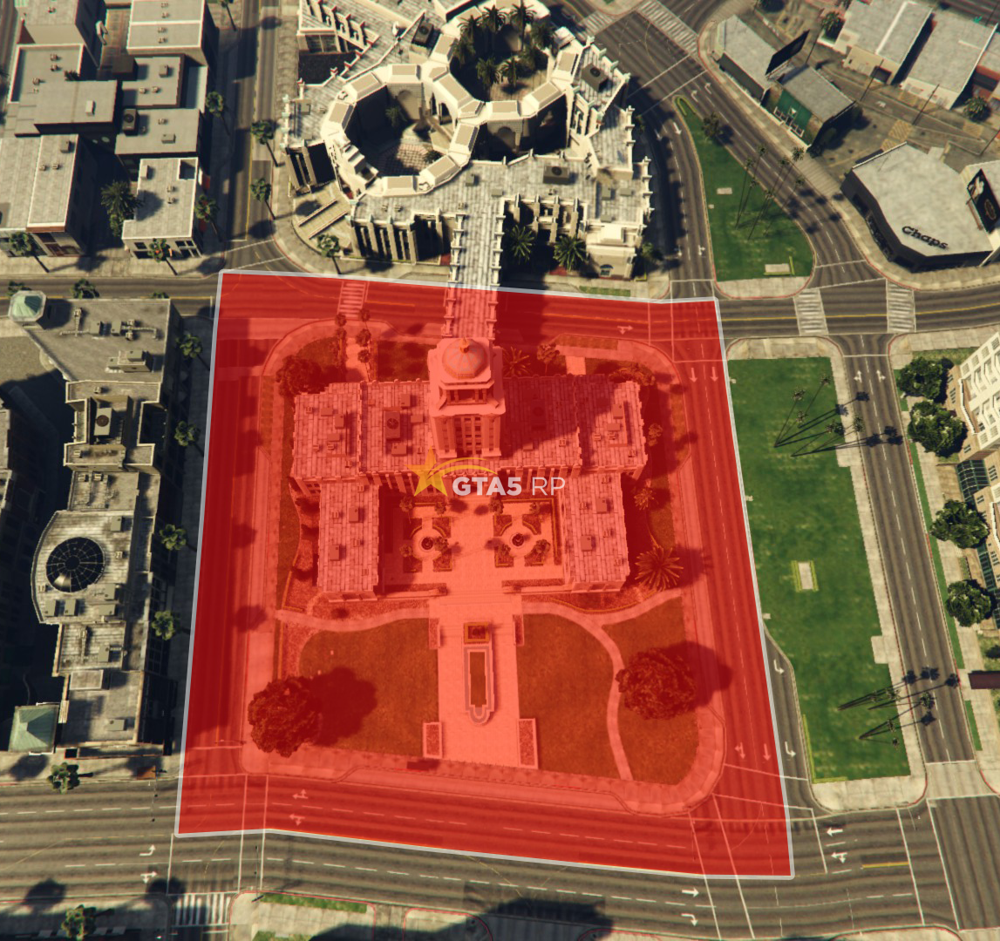

GTA5RP
 Зеленая зона - зона считающаяся общественным местом. Определяется картой, а также функционально. В ней на персонажа накладываются определенные ограничения.
Зеленая зона - зона считающаяся общественным местом. Определяется картой, а также функционально. В ней на персонажа накладываются определенные ограничения.
1.1 В игре обозначены все основные зеленые зоны функционально, они делятся на 2 типа: блокирующие атаку и неблокирующие атаку.
При нахождении в зеленой зоне, неблокирующей атаку, адрес у мини-карты зеленого цвета.
При нахождении в зеленой зоне, блокирующей атаку, возле адреса у мини-карты отображается зеленый щит.
1.2 Все не функциональные зеленые зоны отмечены на карте:
1.3 Во время ивентов любая зона взаимодействия с квестами так же является зеленой зоной.
Карта зелёных зон
 2.1 В зеленой зоне запрещены нанесение урона и все действия криминального характера, которые влекут за собой нарушение законов штата.
Исключение: При нахождении в зеленой зоне, неблокирующей атаку, разрешено применять оружие против сотрудников силовых государственных фракций (LSPD/FIB/LSSD/ARMY/USSS) в целях защиты (защита себя или игроков из своей/союзной фракции или неофициальной организации с функционалом) - если Вы относитесь к преступным группировкам (банды, мафии, неофициальные организации с функционалом). Сотрудникам силовых государственных фракций разрешено применять оружие в целях защиты.
Примечание: Обязательно иметь видео, доказывающее соблюдение условий данного исключения.
Исключение: На территории гетто криминальным фракциям и организациям с функционалом разрешено угрожать применением оружия сотрудникам государственных фракций в зеленой зоне с требованием освободить задержанного члена своей или союзной фракции или организации с функционалом.
Исключение: Правила захватов государственных фракций.
Исключение: Правила захвата клубов.
Исключение: Функциональные ограбления Ammunation и рэкет бизнесов.
2.1 В зеленой зоне запрещены нанесение урона и все действия криминального характера, которые влекут за собой нарушение законов штата.
Исключение: При нахождении в зеленой зоне, неблокирующей атаку, разрешено применять оружие против сотрудников силовых государственных фракций (LSPD/FIB/LSSD/ARMY/USSS) в целях защиты (защита себя или игроков из своей/союзной фракции или неофициальной организации с функционалом) - если Вы относитесь к преступным группировкам (банды, мафии, неофициальные организации с функционалом). Сотрудникам силовых государственных фракций разрешено применять оружие в целях защиты.
Примечание: Обязательно иметь видео, доказывающее соблюдение условий данного исключения.
Исключение: На территории гетто криминальным фракциям и организациям с функционалом разрешено угрожать применением оружия сотрудникам государственных фракций в зеленой зоне с требованием освободить задержанного члена своей или союзной фракции или организации с функционалом.
Исключение: Правила захватов государственных фракций.
Исключение: Правила захвата клубов.
Исключение: Функциональные ограбления Ammunation и рэкет бизнесов.
2.2 Запрещено уходить от любой RP-ситуации в зелёную зону.
Исключение: Сотрудникам государственных фракций при исполнении разрешено уходить от любых RP-ситуаций на титульные территории LSPD, LSSD, FIB, SASPA.
2.3 Запрещено преследование из зеленой зоны.
Исключение: Разрешено преследование сотрудников государственных фракций.
2.4 В зеленой зоне запрещена игра в азартные игры.
2.5 В зеленой зоне запрещено включать soundpad/бумбокс.
2.6 В зеленой зоне запрещено лутерство багажников.
 3.1 На прилегающих к клубам/барам территориях разрешены драки без применения огнестрельного оружия, продажа оружия, наркотиков.
3.2 Безопасность клубов/баров обязаны обеспечивать их владельцы.
3.3 Охрана клуба имеет право открыть огонь по людям спровоцировавшим стрельбу.ы в процессе задержания/похищения с целью приостановить РП-ситуацию до приезда союзников и получения преимущества (приравнивается к уходу от РП и созданию помехи). Запрещено участие в данном процессе со стороны союзников, т.е. приезжать по просьбе других игроков для помехи задержанию/похищению (приравнивается к грубому MG и созданию помехи). Наказание выдается за любой факт выхода из игры перед появлением союзников/приезда на место задержания, но может быть аннулировано впоследствии, если будет предоставлена полная видеозапись со звуком всех участников ситуации длиной не менее 10 минут, предшествующих нарушению, явно опровергающая передачу/получение MG-информации любым способом. | Деморган от 300 минут.
3.1 На прилегающих к клубам/барам территориях разрешены драки без применения огнестрельного оружия, продажа оружия, наркотиков.
3.2 Безопасность клубов/баров обязаны обеспечивать их владельцы.
3.3 Охрана клуба имеет право открыть огонь по людям спровоцировавшим стрельбу.ы в процессе задержания/похищения с целью приостановить РП-ситуацию до приезда союзников и получения преимущества (приравнивается к уходу от РП и созданию помехи). Запрещено участие в данном процессе со стороны союзников, т.е. приезжать по просьбе других игроков для помехи задержанию/похищению (приравнивается к грубому MG и созданию помехи). Наказание выдается за любой факт выхода из игры перед появлением союзников/приезда на место задержания, но может быть аннулировано впоследствии, если будет предоставлена полная видеозапись со звуком всех участников ситуации длиной не менее 10 минут, предшествующих нарушению, явно опровергающая передачу/получение MG-информации любым способом. | Деморган от 300 минут.
 1.1 Лидер - лицо, управляющие и несущее ответственность за какую-либо фракцию перед следящей администрацией.
1.1 Лидер - лицо, управляющие и несущее ответственность за какую-либо фракцию перед следящей администрацией.
1.2 Успешный лидерский срок составляет один месяц (30 дней).
Исключение: Успешный лидерский срок фракции Government составляет 45 дней.
Исключение: Если лидер мафии завладел всеми бизнесами/лидер банды завладел всеми территориями в гетто, то он имеет право сняться с лидерского поста раньше срока, данный срок будет считаться успешным.
Примечание: Если лидер успешно отстоял свой срок, то он может быть допущен на следующий.
Примечание: Если лидер отстоял срок неудачно, то он заносится в черный список лидеров и получает наказание:
Если лидерский срок длился от 1 до 14 дней | Блокировка 31 день + Warn
Если лидерский срок длился от 15 до 30 дней | Warn
1.3 Администрация имеет право занести лидера в черный список лидеров по следующему ряду причин:
Нарушение правил сервера;
Анти-фракционная деятельность;
Нарушения внутренних регламентов и уставов фракции;
Возникновение конфликтных ситуаций в составе фракции;
Неудачный лидерский срок.
1.4 На усмотрение главного следящего за веткой или главного администратора, игрок может быть убран из черного списка лидеров.
1.5 Все средства со счета фракции должны распределяться исключительно на ее нужды.
1.6 При заступлении лидера на пост, он имеет право взять заморозку фракции сроком до двух суток. При заморозке запрещена любая фракционная активность.
Исключение: Проведение наборов.
Исключение: Государственным фракциям разрешена любая активность на их титульной территории.
Исключение: Бандам/мафиям разрешен функциональный заработок (ограбление домов, продажа контрабанды, угон авто, сутенерство).
1.7 Лидер вправе взять "RP день" один раз в неделю.
Примечание: В "RP день" фракция ведет исключительно IC деятельность, не принимая участия в ООС мероприятиях.
Примечание: "RP день" длится 24 часа и начинается с планового рестарта сервера в 7:00 МСК.
1.8 По истечению 3 успешных лидерских сроков подряд, администрация может принять решение о добавлении статуи лидера в зал славы. Это право является исключительным для главной администрации и не подлежит обжалованию/пересмотру.
1.9 Прецеденты, не описанные в правилах, рассматриваются старшей администрацией и главной администрацией в частном порядке.
1.10 Лидер фракции может уволить/понизить игрока по OOC в том случае, если:
-Розжиг конфликтов внутри фракции;
-Нарушение правил сервера/проекта;
-Отсутствие в игре более 7 дней.
-Примечание: Заместитель лидера может уволить/понизить игрока по тем же причинам, с одобрения лидера.
2.1 Работа лидера на сервере оценивается в баллах. Баллы разделяются на 2 категории:
Еженедельные баллы, зависят от активности фракции и нарушений ее состава в течение недели. Обнуляются в начале каждой недели.
Итоговые баллы, начисляются лидеру по итогам недели/окончанию срока, в зависимости от набранных еженедельных баллов.
2.2 В начале срока лидер имеет 0 еженедельных и 0 итоговых баллов.
2.3 Если лидер имеет отрицательное число еженедельных баллов по итогам недели/окончанию срока, он получает одно предупреждение. При получении двух предупреждений, лидерский срок считается неудачным.
2.3.1 Если лидер имеет не менее 10 еженедельных баллов по итогам недели, ему начисляются итоговые баллы.
2.3.2 Итоговые баллы начисляются следующим образом:
-От 10 до 19 еженедельных баллов - 1 итоговый балл
-От 20 до 29 еженедельных баллов - 2 итоговых балла
-От 30 до 39 еженедельных баллов - 3 итоговых балла
-От 40 до 49 еженедельных баллов - 4 итоговых балла
-От 50 до 59 еженедельных баллов - 5 итоговых баллов
-От 60 до 69 еженедельных баллов - 6 итоговых баллов
-От 70 до 79 еженедельных баллов - 7 итоговых баллов
-От 80 до 89 еженедельных баллов - 8 итоговых баллов
-От 90 до 99 еженедельных баллов - 9 итоговых баллов
-От 100 еженедельных баллов - 10 итоговых баллов
2.4 При достижении лидером отметки в -100 еженедельных баллов, лидерский срок считается неудачным.
2.5 Лидер может быть допущен на следующий срок после одобрения главного следящего за веткой или главного администратора.
Исключение: Губернатор, успешно завершивший свой срок, может продлить полномочия на последующий срок по результатам голосования граждан. Если явка избирателей ниже определенного порога, он переизбирается автоматически.
2.6 Если лидер имеет не менее 25 итоговых баллов, после одобрения главного следящего за веткой или главного администратора он имеет возможность передать свои полномочия преемнику.
Исключение: Пост лидера Government не подлежит передаче.
Примечание: Кандидат по рекомендации лидера должен состоять во фракции не менее 14 дней.
2.7 За нарушение лидером или составом фракции правил сервера, лидер может быть лишен части еженедельных баллов.
2.8 За хорошую активность, развитие фракции и проведение мероприятий лидер может получить бонусные еженедельные баллы по усмотрению главного следящего за веткой или главного администратора.
2.9.1 Грубое нарушение правил сервера, в качестве наказания подразумевающее деморган, варн или бан для лидера будет заменено на устный или строгий выговоры.
2.9.2 Степень серьезности нарушения лидера определяется следящей администрацией и не подлежит обсуждению и обжалованию.
2.10 За устные и письменные выговоры лидер фракции лишается определенного количества еженедельных баллов.
Устный выговор: Снимается 20 еженедельных баллов.
Письменный выговор: Снимается 50 еженедельных баллов.
2.11 Начисление и взыскание еженедельных баллов за активность фракции производится куратором или вышестоящей администрацией, по результату проверки отчета оставляемого в специальном канале Discord-серверов: ЧП для государственных фракций / Crime для криминальных фракций.
Примечание: Начисление еженедельных баллов за проведение и участие в глобальном мероприятии начисляется после публикации итогов в теме мероприятия на форуме.
Примечание: Оставлять отчет об осуществлении функциональной активности, можно в течение 72 часов с момента ее выполнения. Отчеты оставленные по истечении указанного времени рассматриваться не будут.
2.12 Организация глобальных мероприятий может быть оценена в диапазоне от -20 до +20 еженедельных баллов. Участие в глобальных мероприятиях может быть оценено от 0 до +6 еженедельными баллами.
Примечание: Начисление еженедельных баллов за проведение и участие в глобальном мероприятии начисляется после публикации итогов в теме со сценарием глобального мероприятия на форуме.
3.1 Соблюдать правила сервера и контролировать их соблюдение составом фракции.
3.2 Поддерживать минимальный суточный онлайн не менее 4 часов.
3.3 Модерировать платформы своей фракции (Discord, раздел на форуме, сайт фракции).
3.4 Развивать RolePlay составляющую, повышать уровень досуга игроков своей фракции.
3.5 Устранять и пресекать внутри-фракционные конфликты.
3.6 Провести минимум одно ГМП в первые 15 дней лидерского срока.
3.7 Иметь микрофон для коммуникации.
4.1 Играть на других RP проектах в GTA 5.
4.2 Вступать в OOC конфликт с другими лидерами.
4.3 Бездействовать/игнорировать нарушения подчиненных.
4.4 Обсуждать действия/решения, принятые следящей администрацией.
4.5 Некорректно высказываться в сторону других игроков/администраторов.
4.6 Изменять название рангов без одобрения куратора.
4.7 Повышать/понижать/увольнять членов фракции для того, что бы избежать санкции в виде выговоров. | Строгий выговор
 5.1 Лидер банды/мафии должен придумать RP прикрытие для своей фракции.
Примечание: Лидер банды/мафии должен иметь тему на форуме с актуальной информацией о текущем прикрытии фракции.
5.1 Лидер банды/мафии должен придумать RP прикрытие для своей фракции.
Примечание: Лидер банды/мафии должен иметь тему на форуме с актуальной информацией о текущем прикрытии фракции.
5.2 Лидер банды/мафии должен иметь тему на форуме с актуальной информацией о текущей дипломатии фракции.
1.1 Каждый сотрудник государственной фракции обязан соблюдать законы штата, этический кодекс и вести себя адекватно.
1.2 Нарушая уставные нормы, например, оскорбляя человека при задержании (даже будучи 1х1 с задержанным), превышая полномочия, нарушая законодательную базу, контактируя с представителями криминального мира, сотрудник государственной фракции обязан опираться на окружающую его обстановку. Подобные действия в людных местах (на местах задержания, около полицейского участка, у здания FIB и т.п), в случае грубого нарушения стандартной РП модели поведения государственного сотрудника, будут расцениваться как NonRP поведение.
1.3 Каждый сотрудник государственной фракции обязан представиться (отыграть опознавательный знак/функционально показать удостоверение) при обращении к любому лицу, независимо от его статуса.
Примечание: Представление должно произойти в течение первой минуты взаимодействия.
1.4 Сотрудникам государственной фракции при исполнении разрешено прибегать к физическому воздействую на гражданского, лишь в случае, если:
Это необходимо по рабочей ситуации (нужно для расследования, нужно найти сообщника и т.п.)
Сотрудник отыгрывает роль преступника (находится во внедрении, либо под прикрытием)
В обстановке полной секретности и опасения последствий нарушения закона (нельзя забрать в открытую человека с места задержания и увезти в лес и т.п.)
Примечание: Запрещено похищать/пытать человека, исходя из личных причин (конфликт, неприязнь и т.п.).
1.5 Руководство государственной фракций и государственные служащие, ответственные за контроль работников государственной фракций, должны следить за законностью и правомерностью исполнения сотрудниками государственных учреждений своих обязанностей.
Примечание: Игнорирования подобных правонарушений может быть расценено как NonRP поведение.
1.6 Незаконность в действиях сотрудника квалифицируется как IC нарушение и рассматривается в Role Play процессе, путем подачи жалобы или обращения в суд.
1.6.1 Если IC разбирательство не состоялось по тем или иным причинам (например, отсутствие отыгровок камеры), то игрок может подать жалобу на предполагаемого нарушителя, прикрепив доказательства нарушения, и попытки решить ситуацию в IC. Тогда ситуацию рассмотрит администрация и может принять решение об NRP поведении государственного сотрудника, невзирая на срок давности предполагаемого нарушения.
Примечание: Жалоба должна быть подана в течение 72 часов после окончания IC разбирательства, которое не состоялось по тем или иным причинам.
1.7 Администрация сервера в лице главного следящего/главной администрации вправе устанавливать любые правила и ограничения, руководствуясь РП моделью сервера, для поддержания стабильной работы фракции и во избежание некорректной трактовки задокументированных правил.
1.8 Сотрудникам государственной фракции разрешено принимать игроков только на 1 ранг.
Исключение: При наличии у игрока военного билета, разрешено принять его на 3 ранг в LSPD/LSSD/FIB/SASPA, на 6 ранг в ARMY.
Исключение: Перевод или восстановление во фракцию.
Примечание: Восстановление возможно исключительно на -2 ранга и меньше от того, который был до увольнения/перевода.
Примечание: Восстановление возможно бессрочно с момента увольнения.
Примечание: Восстановление возможно при условии, что игрок находился во фракции более 14 дней.
Примечание: Восстановление возможно исключительно на -3 ранга и меньше от того, который был до выдачи WARN игроку.
1.8.1 После смены личности на чёрном рынке запрещается назначать игрока на должности старшего состава в течение 15 дней. В этот период допускается только повышение в отделах по системе повышения.
1.8.2 После успешного прошения о помиловании к Губернатору штата Сан-Андреас запрещается назначать игрока на должности старшего состава в течение 10 дней. В этот период допускается только повышение в отделах по системе повышения.
1.9 Запрещается блат во фракции в любом его проявлении.
Исключение: В первый день срока лидер вправе устроить день блата.
Примечание: День блата длится 24 часа, в это время разрешены любые повышения и увольнения. В случае замены члена старшего состава, снятому с должности выдается максимальный ранг, не являющийся старшим составом.
Исключение: По одобрению главного следящего за веткой или главного администратора разрешено устраивать дополнительный день блата.
1.10 Повышение игроков в государственных фракциях происходит максимум на 1 ранг в сутки.
Исключение: Повышение игроков до 6-го ранга (включительно) происходит раз в 12 часов (кроме Weazel News).
Исключение: Во фракции Weazel News разрешено повышать на 2 ранга в сутки.
Исключение: Во фракции Government разрешается повышать игроков, пропуская ранги, не относящиеся к их министерству/департаменту/иному ведомству.
Исключение: Назначение на руководящую должность, однако запрещено назначать на руководящую должность после получения WARN в течении 10 дней.
1.11 Повышения производятся по системе повышений, на основании отчетов о проделанной работе.
1.12 Запрещается оставлять Государственную Амуницию после увольнения.
Примечание: Может быть расценено как слив склада.
1.13 Любые взаимодействия с игроками должны происходить с наличием соответствующих отыгровок в голосовой/текстовый чат.
1.14 Разрешено использовать военную технику (Insurgent, riot, barracks, mesa, crusader, annihilator, все самолеты) исключительно во время: рейдов, поставок, Airdrop, нападений на оружейные магазины, оцеплений, военных положений, террористических актов, одобрения администрации.
1.15 Сотрудникам государственных фракций запрещено хранить в личном транспорте/шкафу/на складе организации оружие, аптечки, бронежилеты и различные спец. средства принадлежащие любой государственной фракции. Приравнивается к сливу склада.
Исключение: Разрешено хранить оружие, которое не принадлежит фракции в которой вы находитесь.
Примечание: Ключевым фактором принадлежности оружия к вашей фракции служит серийный номер.
Примечание: Запрещено хранение в личном транспорте/шкафу/на складе организации государственного бронежилета.
Примечание: Обмен оружием между игроками запрещен.
1.16 Сотрудникам государственных фракций при исполнении прямых обязанностей запрещено находиться на титульных территориях организаций/криминальных фракций.
Исключение: Проведение рейда на фракцию / Cотрудники EMS в сопровождении участников организации, фракции / По приглашению руководства организации, фракции.
Примечание: Cотрудники Government обязаны сообщить о своей РП причине Главному следящему за государственными фракциями и получить одобрение.
1.17 Все дистанционное IC общение государственных фракций обязано происходить исключительно через внутриигровую рацию.
Исключение: Во время спец. операций, ЧП, ВП разрешается использовать спец.канал ЧП для координации совместных действий между государственными фракциями.
1.18 Законодательные акты, после принятия Губернатором, проходят этап проверки администрацией.
1.19 Запрещено находиться под воздействием и использовать алкоголь, наркотические средства, кальяны, бонги и т.п. в рабочее время (в функциональной форме) и во время исполнения рабочих обязанностей сотрудником.
1.20 Сотрудники государственных фракций, при задержании подозреваемого, обязаны проводить конфискацию (изъятие) имущества исключительно через функционал. Проводить изъятие через обмен или выбрасывание предметов на землю запрещено.
Исключения: Подбор оружия и патронов, выпавших при перестрелке; Изъятие нелегальных предметов при проведении рейдов; Изъятие бронежилетов; Изъятие рыбы.
Примечание: Сотрудник в праве требовать задержанного надеть на себя сумку если она была найдена в ходе обыска.
1.21.1 Запрещено требовать открывать багажник авто, вне зависимости от РП ситуации.
1.21.2 Сотрудникам государственных фракций, разрешено обыскивать багажник исключительно через функционал G - Работа.
1.21.3 Если необходимо изъять нелегальные предметы из багажника, следует обратиться за помощью к администрации, через репорт.
Примечание: Изъятие нелегальных предметов производится исключительно в присутствии владельца автомобиля.
Примечание: Открытие багажника должно происходить с отыгровкой в /try.
Пример:
"/me достал набор отмычек"
"/do Отмычка в руке."
"/me начал взламывать замок отмычкой"
"/try взломал замок | Неудачно."
"/me достал пистолет"
"/do Пистолет в руке."
"/me выстрелил из пистолета по замку"
"/try сломал замок выстрелом | Удачно."
Примечание: Один игрок может попытаться вскрыть багажник отыгровкой в /try не более трех раз.
1.22 К сотрудникам государственных фракций запрещено применять финансовые взыскания (штрафы, плата за трудоустройство, плата за увольнение и т.д.)
Исключение: Сотрудники Weazel News в формате коммерческой организации.
Исключение: Штрафы за нарушения Дорожного и Уголовно-административного кодексов.
Примечание: Санкции в формате урезания или лишения премирования сотрудника разрешены.
1.23 Максимальное количество заместителей лидера - 3, количество начальников отделов согласовывается с администрацией сервера, максимальное количество заместителей начальников отделов - не более 3 на отдел.
Исключение: Во фракции Government вице-губернатор может быть только один.
Исключение: По согласованию с следящей администрацией возможно назначить большее кол-во заместителей.
1.24 Правительство штата/LSPD/LSSD/ARMY/FIB/EMS/SASPA должны иметь четкую структуру отчетов пополнения/распределения средств казны фракции.
1.25 Максимальная премия любого сотрудника/лидера государственной фракции не может превышать 10% от суммы имеющиеся на фракции.
Исключение: Government.
1.25.1 Фракция Weazel News имеет право выписывать премии на общую сумму не более 4.000.000$ в неделю, при этом максимальная сумма премии для одного сотрудника составляет 400.000$
1.26 Запрещено нахождение и какое-либо взаимодействие с черным рынком, зоной выдачи ограблений в Палето-Бэй, зонами сдачи контрабанды, зонами спавна проституток, зоны взятия и сдачи "Автоугона", зоны режимов для криминальных фракций "захвата флага" и "сопровождения" и прилегающим к ним территориям, зоны аренды коммерческих помещений и прилегающие к ним территории.
1.27 Сотрудник силовой государственной фракции вправе остановить или же задержать человека в маске до выяснения личности, т.к такой человек является приоритетной целью.
1.28 Запрещено ставить префикс ранга несоответствующий лору фракции и/или нарушающий правила сервера | Warn / Блокировка аккаунта
1.29 Запрещено иметь "твинк" (второго персонажа) в государственных фракциях, если другой Ваш персонаж имеет неприкосновенность, описанную в Законе "О неприкосновенности должностных лиц Штата San Andreas"
Исключение: Главный Врач EMS, Генеральный директор государственных СМИ, Судьи/Помощники Судей, лица, обладающие статусом временной неприкосновенности, Министр Здравоохранения/Зам. Министр Здравоохранения, Министр Культуры/Зам. Министра Культуры, Министр Финансов/Зам. Министра Финансов.
Примечание: Разрешено иметь "твинк" в фракциях EMS и Weazel News.
Примечание: Судьям/Помощникам судей запрещено иметь твинк в прокуратуре.
1.30 Каждый государственный сотрудник, в опознавательном знаке (бейджик, нашивка) - обязан получить уникальный номер в соответствующем канале Discord.
Примечание: За использование в отыгровках другого номера - сотрудник будет наказан варном.
1.31 Запрещена завуалированная/откровенная нецензурная брань и оскорбления в /f чате. | NextWarn / Warn
1.32 Титульная территория любой государственной фракции находится под видеонаблюдением, в соответствии с пунктом правил сервера 6.37.
Примечание: В интерьерах не все помещения находятся под видеонаблюдением, стоит опираться на присутствие или отсутствие камер видеонаблюдения в конкретном помещении.
1.33 Все IC публикации на форуме в разделе государственных фракций/сайте фракций должны содержать подпись публикующего их персонажа.
Примечание: Публикации без подписи считаются недействительными в IC. Использование их в РП-процессе может быть откачено и расценено как MG.
Примечание: В РП-процессе подпись считается цифровой.
 2.1 Все государственные фракции зависимы от правительства нашего штата и подчиняются исключительно ему.
2.1 Все государственные фракции зависимы от правительства нашего штата и подчиняются исключительно ему.
2.2 Запрещается обращаться к Администрации сервера с просьбой урегулировать вопросы/проблемы, которые можно решить через Правительство Штата.
2.3 Сотрудники FIB берут на себя главную роль в любых спец. операциях.
2.4 Сотрудники LSPD/LSSD имеют право брать на себя командование в спец. операциях, при отсутствии старших чинов FIB или полном согласии от FIB с передачей командования.
2.5 Сотрудники National Guard имеют право брать на себя командование в спец. операциях, при отсутствии старших чинов FIB,LSPD,LSSD или с полным согласием старших чинов LSPD/LSSD.
2.6 Любые внутренние правки/уставы фракции должны быть согласованы с Правительством Штата.
2.7 На любых чрезвычайных ситуациях обязана присутствовать как минимум 1 карета скорой помощи.
2.8 После введения каких-либо положений/правок внутри Фракции, к примеру Формирование новых отделов/пунктов устава/локации для проведения тренировок, каждый пункт и нововведение должны быть обговорены и согласованы с Куратором Фракции.
2.9 Фракции FIB/LSPD могут внедрять своих агентов в какую-либо фракцию, при нарушении УК составом. Для мафий: Нарушения 5+ ранга. Для банд: Нарушения 2+ ранга.
2.10 Для удостоверение служебного статуса сотрудники FIB, LSSD, LSPD, GOV без особых элементов одежды/формы/бейджика обязаны предоставить функциональное удостоверение.
2.11 Игрок может быть занесен в черный список государственной фракции/всех государственных фракций за антифракционную деятельность и нарушение правил проекта/cервера по решению Администрации сервера.
Примечание: Занести игрока в черный список может лидер фракции, в которой состоит игрок, губернатор/председатель верховного суда/генеральный прокурор. Сотрудники государственных фракций вправе выдавать только IC ЧС фракции/отделов/министерств и тому подобное.
2.12 Игрок может быть вынесен из черного списка государственной фракции/всех государственных фракций по решению администрации сервера/губернатор/лидера фракции, который вносил игрока в черный список.
Примечание: При вынесении игрока из черного списка государственной фракции/всех государственных фракций, следует придерживаться иерархии: администрация сервера -> Губернатор -> Лидер фракции, который вносил персонажа игрока в черный список.
Пример: Губернатор может вынести персонажа игрока из чёрного списка, если внесение в черный список производилось лидером фракции, в которой состоял игрок.
Пример: Губернатор не может вынести персонажа игрока из чёрного списка, если внесение в черный список производилось администрацией сервера.
2.13 Сотрудник, уволившийся с использованием привилегий VIP-статуса, заносится в черный список фракции.
Исключение: В случае отсутствия во фракции игрока, который имеет возможность увольнения игроков ниже себя рангом, допускается увольнение с использованием привилегий VIP-статуса.
Пример: Вы находитесь на должности Заместителя лидера, лидер снимается и у Вас нет возможности увольнения по IC, в данном случае Вы можете покинуть фракцию самостоятельно, с использованием привилегий VIP-статуса.
2.14 Разрешаются переводы между фракциями.
Исключение: Переводы младшего состава запрещены (1-4 ранг).
Примечание: Сотрудники среднего состава переводятся на сотрудников среднего состава. (до -3 от лидера)
Исключение: Сотрудники старшего состава могут переводиться на сотрудников среднего состава по желанию лидера.
Примечание: Лидеры задействованных в переводе фракций вправе отказать сотруднику в переводе.
Исключение: Government - Отдел USSS
2.15 Запрещается перевод сотрудников из силовых фракций в гражданские и наоборот (Weazel News, EMS, Government).
Исключение: Сотрудникам силовых фракций разрешены переводы в United States Secret Service (USSS) и наоборот.
2.16 Перевод осуществляется с согласия лидеров двух государственных фракций.
Исключение: Одобрение на перевод может быть получено от Губернатора или Вице-Губернатора.
Правила силовых государственных фракций
3.1 Сотрудники FIB/LSPD/LSSD/ARMY/USSS/SASPA имеют право задерживать граждан штата, если те совершили правонарушение или проходят под следствием со стороны силовых фракций.
3.2 Сотрудники FIB/LSPD/LSSD/ARMY/USSS/SASPA имеют право останавливать транспортные средства с целью проверки авто/мото на наличие нелегальных предметов и проверки личности водителя только в случае совершения гражданами штата правонарушения или ориентировки на ТС.
Примечание: Ориентировка должна быть в Discord канале ЧП/фракции.
3.3 ARMY/LSSD/USSS запрещено проводить патрули в гетто.
Исключение: Реагирование на код, преследуемый автомобиль заехал в Ghetto, рейд, ЧП, ВП.
3.4 Сотрудники FIB/LSPD/LSSD/USSS/ARMY/SASPA должны хранить запись каждого нарушения гражданина, которого они представили под следствие/внесли в DataBase на протяжении 72-х часов.
3.4.1 Сотрудники FIB/LSPD/LSSD/ARMY/USSS/SASPA обязаны носить и использовать исключительно функциональную боди-камеру.
3.5 Сотрудники FIB/LSPD/LSSD/ARMY/USSS/SASPA могут проводить задержания/работать по вызову/исполнять иные фракционные обязанности исключительно на фракционном транспорте.
Исключение: Лидер фракции, его заместители, начальники отделов, их заместители, сотрудники GOV за исключением отдела USSS, сотрудники WN при исполнении рабочих обязанностей административного характера.
Исключение: Агентуре CID, IB, Детективным отделам LSPD/LSSD исключительно при проведении различных следственных мероприятий, не предусматривающих раскрытие личности сотрудника или его статуса государственного служащего. Пример: Внедрения, скрытный сбор информации и т.д. Зарегистрированный личный транспорт.
3.6 Сотрудникам государственных фракций запрещено задерживать игрока, который был убит и появился в больничной палате.
Примечание: Разрешено задерживать игрока, который нарушает законодательство штата за пределами палаты.
Исключение: На территории EMS LS/EMS SS и прилегающих к ним территориях (зеленая зона) запрещено проводить обыск на основании введенного ЧП/ВП, а так же указов, подразумевающих обыск.
3.7 В случае если на сотрудников FIB/LSPD/LSSD/USSS/SASPA были совершены массовые нападения, они вправе запросить поддержку у National Guard.
3.8 Сотрудники LSPD/LSSD имеют право проводить задержание в GreenZone и при необходимости применять огнестрельное оружие.
3.9 Сотрудники FIB/LSPD/LSSD/ARMY/USSS/SASPA обязаны вести непрерывную видеозапись при осуществлении любых действий от лица закона. Запись должна сохраняться не менее 72 часов и предоставляться администрации по первому требованию.
3.10 Сотрудникам LSPD/LSSD/FIB запрещается находиться во фракции выше порядкового 4-го ранга, без военного билета.
Примечание: Игрок старшего состава, выдавший ранг сотруднику без билета, несет наказание в виде | Warn.
3.11 Сотрудникам государственных фракций запрещено использовать броню ''Гетто/Организации'' во время исполнения служебных обязанностей.
Исключение: Работа под прикрытием (CID, DB, SDB).
3.12 Сотрудникам государственных фракций запрещено использование оружия со стертым серийным номером/оружия клуба Merryweather(при исполнении).
Исключение: Работа под прикрытием (CID, DB, SDB), Weazel News.
3.13 Сотрудникам отделов SR, SWAT, ATF, DF разрешено отклоняться от норм, описанных в пункте 1.1. правил государственных фракций, если они находятся не в зеленой зоне.
Примечание: Грубое нарушение законов штата (Особо тяжкие преступления: Статьи помеченные " *** "), оскорбления содержащие сексуальный подтекст, запрещены. | от 60 минут Деморгана + WARN
3.14 При участии в рейдах, поставках, силовой поддержке сотрудникам государственных фракций, захватах государственных учреждений, сотрудники отделов SR, SWAT, ATF, DF могут не представляться по имени, званию или предоставлять знаки отличий. отдела, при этом руководство обязано вести видеозапись всего происходящего и быть готовым предоставить ее по первому требованию администрации.
3.15 Контакт с гражданами и прием жалоб осуществляет руководством отдела.
3.16 Сотрудникам отделов SR, SWAT, ATF, DF запрещено заключать под стражу в КПЗ/Федеральную Тюрьму, выписывать штрафы.
3.17 Сотрудникам отделов SR, SWAT, ATF, DF разрешено иметь тату на запрещенных этическим кодексом местах, линзы неестественного цвета, если визуально они скрыты элементами одежды/маской, очками.
3.18 Сотрудники FIB/LSPD/LSSD/GOV должны хранить запись причины повышения/понижения степени розыска (звезд) на протяжении 72-х часов.
4.1 Солдатам National Guard запрещается покидать территорию Форта без наличия причины.
4.2 Солдаты National Guard имеют право задерживать граждан штата, совершивших противозаконные действия на территории КПП, с дальнейшей передачей их силовым фракциям. FIB/LSPD/LSSD.
4.3 Солдаты National Guard обязаны проводить поставки государственным фракциям.
4.4 Солдатам National Guard запрещается применять летальное оружие в сторону безоружных гражданских.
Исключение: Проникновение на базу.
Исключение: IC причина.
4.5 Солдаты National Guard имеют право патрулировать округ штата на предмет криминальной деятельности.
4.6 Солдаты National Guard руководствуются исключительно нормативно-правовыми актами, уставом и приказам руководящего состава.
4.7 Солдаты National Guard подчиняются всем законам штата и не имеют право препятствовать деятельности силовых фракций.
4.8 Сотрудники силовых фракций вправе подать заявление на прохождение КМБ для получения военного билета.
Примечание: Government, EMS - Не могут пройти КМБ. Отдел USSS только в случае указа Министра Внутренней Безопасности.
Примечание: Максимальное кол-во сотрудников которое можно отправить на КМБ от одной фракции за один лидерский срок - 15.
4.9 Длительность и порядок проведения КМБ определяет Генерал Армии, согласовав все аспекты с Министром Внутренней Безопасности и Куратором Фракции.
4.10 Запрещено создание оружия/боеприпасов с целью сохранения материалов от нападения crime.
| Устный выговор лидеру.
4.11 Запрещено использовать любой вид техники для перекрытия КПП-1, КПП-2 в дни и время нападения на Форт-Занкудо.
4.12 Запрещена продажа военных билетов. | Блокировка персонажа
4.13 Для получения военного билета, игрок должен находиться во фракции не менее 10 суток.
Исключение: КМБ.

5.1 Правительство штата вправе устанавливать график проверок для государственных фракций.
Примечание: Проверки могут проходить не чаще 3-х раз в неделю для одной государственной фракции.
5.2 Правительство штата осуществляет руководящую роль в иерархии государственных фракций.
Примечание: Исключение Weazel News, в зависимости от заключенного контракта с Government.
5.3 Правительство штата обязано поддерживать актуальность Конституции и Нормативно-Правовых актов.
5.4 Администрация штата обязана иметь Коллегию Адвокатов для представления прав и интересов граждан штата в Суде.
5.5 Адвокат, состоящий в Ассоциации адвокатов, вправе присутствовать при задержаниях, руководствуясь законодательством Штата.
5.6 Правительство штата обязано иметь Судебную ветвь и все относящиеся к ней инстанции.
Пояснение: Верховный Суд, Апелляционный Суд, Окружной Суд.
5.6.1 Губернатору запрещается вносить изменения в состав судейского корпуса в день блата.
Исключение: Одобрение Куратора GOV/ГС Государственных фракций.
5.7 Верховный судья осуществляет полный контроль судебной ветви власти, а также назначает апелляционных и окружных судей.
5.8 Стоимость проведения судебных заседаний устанавливается действующим Министром Финансов.
Примечание: Стоимость судебного заседания не может превышать 25.000$.
5.9 Правительство штата обязуется выдавать премии всем государственным фракциями не менее 1-го раза в неделю.
5.10 Адвокат вправе запросить видеофиксацию нарушения со стороны обвинения. Сторона обвинения обязуется предоставить полную фиксацию нарушения в сторону защиты.
Примечание: Фиксация запрашивается в зале проведения суда.
5.11 Правительство штата обязано предоставлять возможность для регистрации и постановления на учёт юридических лиц.
5.12 Администрация правительства имеет право расходовать бюджет государственно казны только в интересах штата, при этом уведомив Куратора GOV/ГС Государственных фракций.
5.13 Администрация правительства имеет право самостоятельно ограничивать бюджет той или иной государственной фракции (исходя из состояния казны, а так же других причин)
5.14 Министр Финансов не может выделять более 4.000.000$ на премии всем государственным фракциям.
Исключение: На Government может быть выделено до 4.500.000$.
Примечание: Одобрение администрации сервера в лице главного следящего/главной администрации.
5.15 После выдачи еженедельных премий государственным фракциям на казне Government должно оставаться минимум 4.000.000$
5.16 Администрация сервера в лице куратора фракции/главного следящего/главной администрации вправе устанавливать ограничения по взаимодействии с казной фракции на свое усмотрение, не уточняя конкретные цифры в правилах, руководствуясь текущей экономической ситуацией на сервере.
Важно: Любой причинённый экономический вред серверу влечёт за собой блокировку аккаунта.
5.17 Все официальные указы, постановления, законы, регламенты и прочие документы должны публиковаться на форуме в соответствующих разделах.
Исключение: Ордера на рейд преступных группировок/задержание государственных сотрудников разрешается оформить официальным документом, используя функциональную "записку". После проведения рейда/задержания, ордер должен быть продублирован на форум в течение 1 часа.
5.18 Брать со склада фракции оружие и патроны разрешено только сотрудникам Министерства Внутренней Безопасности.
5.19 Запрещено присваивать себе любые денежные средства полученные в следствии работы (штрафы, налоги и т.п) | Приравнивается к вреду экономике.
Исключение: Сотрудники, которые выдают лицензии, могут брать себе 7500$ от общей стоимости лицензии. Оставшаяся сумма за принятие экзамена/оплату неустойки должна поступить на казну Government.
5.20 Любое введение Чрезвычайного/Военного Положения должно пройти одобрение через куратора фракции и главного следящего за государственными фракциями.
5.21 Законодательная власть правительства обязана обговаривать и утверждать любое изменение/нововведение в законодательную базу с главным следящим за государственными фракциями.
5.22.1 Любые нормативно-правовые акты, фактически имеющие силу закона (судебные прецеденты, указы и т.п.), должны быть согласованы с администрацией (Куратор GOV/ГС Государственных фракций) | Warn, удаление документа.
5.22.2 Администрация имеет право в одностороннем порядке вводить/упразднять законодательные акты или вносить правки в действующее законодательство, оставляя за Губернатором право пересмотра положений вводимых и изменяемых законов.
5.23 Губернатору, министрам, судьям, прокурорам и иным должностным лицам Правительства разрешается удалять/изменять указы, постановления и прочие документы, а также ответы, связанные с исками на форуме.
Примечание: Каждое удаление/изменение должно сопровождаться уведомлением в специальном Discord-канале ЧП, с указанием внесенных изменений (было - стало).
Исключение: Запрещено удалять/изменять документы, по которым произошло РП-взаимодействие (уведомление о документе, исполнение), а также документы, с момента публикации которых прошло более 1 часа, без одобрения ГС государственный фракций/Куратора GOV.
5.24 Cудьям и прокурорам запрещено удалять из DataBase дела задержанных или заключенных, без каких-либо IC постановлений, решений или апелляции суда в ином случае информация будет восстановлена. | от 60 минут деморгана + WARN.
5.25 Запрещена агитация и ООС договоренности в любом их проявлении в отношении принятия или отказа в принятии законопроектов. В случае если законопроект отклонен без видимых на то причин, а также, без какой-либо аргументации, следящая администрация вправе рассмотреть данный закон и одобрить его с дальнейшим внесением на форум.
5.26 Решение Председателя Верховного суда не могут быть оспорены в рамках IC-процесса. Вынесение Председателем Верховного суда заведомо незаконного решения расценивается как NonRP.
5.27 Все действия, связанные с получением/передачей материалов/информации в рамках прокурорского расследования или судопроизводства, должны сопровождаться соответствующими отыгровками, которые прикрепляются в конце документа.
Примечание: Материалы, предоставляемые заявителем рапорта/жалобы/искового заявления, должны содержать отыгровки получения материалов (при необходимости), в противном случае они не считаются действительными в РП.
Пример: предоставление видеоматериала без функционально включенной body-камеры обязательно должно сопровождаться отыгровкой получения записей камер видеонаблюдения или аналогичной ей.
Примечание: При передаче любой информации/материалов "по почте" (через Discord), их отправка считается успешной только после отправки получателю как информации/материалов, так и скриншотов отыгровки этого действия.
5.28 Следящая администрация (Куратор GOV, ГС Государственных фракций.) вправе запросить дело/материалы судопроизводства, согласно которым было выдано постановление/ордер на арест/увольнение или иные действия, а также аргументацию принятия итогового решения, для проверки на соблюдение РП-модели.
Примечание: В случае выявления отсутствия отыгровок или иных ООС нарушений в материалах дела, оно может быть откачено, а вынесший финальной решение игрок может понести наказание за NonRP поведение.
5.29 Сотрудники правительства/руководство фракции не вправе отстранять государственных служащих от исполнения должностных обязанностей на срок более 48 часов, а также более одного раза в рамках одной ситуации.
Исключение: Отстранение может быть выдано на больший срок или продлено с одобрения Куратора GOV/ГС Государственных фракций.
5.30 Постановления и подобные документы, публикуемые Правительством и другими структурами, осуществляющими запрос документации и прочей информации (в том числе записей задержания и т.п.) не могут иметь срок исполнения менее 24 часов, в ином случае они считаются недействительными в IC, а опубликовавший такое постановление (документ) игрок может быть наказан за NonRP поведение.
5.31 Должность "Cоветник Генерального Прокурора/Прокурор" не могут одновременно занимать более 20 персонажей. | Устный выговор лидеру.
5.32 Губернатор обязан поддерживать актуальность законодательной базы.
5.33 Один игровой персонаж может получать помилование губернатора не чаще одного раза в 15 дней.
5.34 Чрезвычайное положение и военное положение могут вводиться на срок не превышающий 24 часа.

6.1 Сотрудники EMS обязаны оказывать первую медицинскую помощь всем гражданам штата, независимо от местоположения вызова.
6.2 Сотрудники EMS обязаны выдавать медицинскую карту всем гражданам штата.
6.3 Сотрудники EMS обязаны грамотно вести отыгровку Role Play действий.
6.4 Сотрудники EMS вправе проводить проверки государственным фракциям не чаще 1-го раза в неделю.
6.5 Сотрудники EMS обязаны проводить поставки аптечек всем государственным фракций.
6.6 Запрещается указывать NonRP причины в диагнозе мед.карты.
6.7 Лидер EMS вправе самолично устанавливать регламент ценовых категорий на медицинские услуги, после согласования с Министром Финансов и Куратором Фракции.

7.1 Подаваемые объявления должны проходить грамотную модерацию со стороны сотрудников Weazel News.
7.2 Объявление должно начинаться с заглавной буквы.
7.3 В объявлениях запрещается продажа нелегальных веществ, в том числе завуалированная.
7.4 Все названия автомобилей должны быть в английской (ENG) раскладке.
7.5 Цена в объявлениях указывается без сокращений, с расстановкой точек после трех символов.
Пример: 2.500.000.
7.6 В объявлениях запрещено использование нецензурных выражений в том числе в завуалированном виде.
7.7 Запрещено использование CapsLock в объявлениях.
7.8 Запрещено использовать эфир (зеленый чат) рекламы для функционального бизнеса.
7.9 Сотрудникам Weazel News запрещено превышать плату в отметку свыше 100.000$ за внесение людей в список "Forbes".
7.10 Лидер может изменить статус фракции с коммерческой на государственную и обратно (для становления государственной фракцией, нужно разрешение губернатора, соответствующий указ или нормативно-правовой акт и одобрение следящей администрации).
7.10.1 Если Weazel News является государственной фракцией, то:
На фракцию и игроков в ней распространяются все правила государственных фракций.
Непосредственным руководителем в правительстве является губернатор.
Правительство обязано выплачивать еженедельные премии сотрудникам Weazel News, наряду с другими государственными фракциями.
Программу работы Weazel News полностью согласовывают с Правительством, в том числе взаимодействие с частными лицами, фракциями и организациями.
Все государственные. фракции обязаны сотрудничать с Weazel News, основываясь на логике работы государственного СМИ.
Сотрудники Weazel News признаются государственными служащими, а значит на них распространяются все права и обязанности государственных служащих, основываясь на законодательство Штата.
Запрещено иметь какие-либо связи с криминальным миром (банды/мафии).
7.10.2 Если Weazel News является коммерческой фракцией, то:
На фракцию и игроков частично распространяются правила государственных фракций.
Модель поведения сотрудников Weazel News должна соответствовать модели поведения обычного гражданина, который работает в частной коммерческой организации.
Все игроки фракции являются сотрудниками частной коммерческой организации, а значит не имеют никаких привилегий как государственных служащих.
Weazel News существуют за счет своего собственного внутреннего финансового обеспечения.
Правительство имеет право возложить определенное налоговое бремя на Weazel News.
7.11 Лидер обязан в течение 7 дней, после своего назначения, урегулировать правовой статус Weazel News.
7.12 Цены за все представляемые услуги устанавливаются лидером по согласованию с Главным Администратором/Главным следящим за государственными фракциями.
7.13 Сотрудники Weazel News не имеют права отказывать гражданам в предоставлении услуг, входящих в их компетенцию (публикация объявлений, репортажи, интервью, реклама и пр.), за исключением случаев, когда это нарушает правила сервера или законодательство штата.
Примечание: В случае отказа в размещении агитационной рекламы кандидата на пост губернатора, при отсутствии объективных нарушений со стороны кандидата, лидер Weazel News подлежит немедленному снятию с занимаемой должности.

8.1 Лидер федеральной тюрьмы имеет право устанавливать внутренние регламенты для заключенных после утверждения у Куратора/ГС Государственных фракций и в дальнейшем у Правительства.
8.2 Сотрудники федеральной тюрьмы обязаны осуществлять надзор за заключенными.
8.3 Процесс заключения должен сопровождаться полноценно RP-ситуацией от начала до конца.
8.4 Изменяя срок ареста заключенного, сотрудники Федеральной тюрьмы обязаны фиксировать основания для изменения срока на боди-камеру.
Примечание: Видеозапись необходимо хранить не менее 72 часов.
Примечание: Уменьшать срок ареста заключенного может только лидер фракции, а также старший состав (-3 от лидера и старше).
Примечание: Куратор фракции вправе запросить видеозапись, подтверждающую правомерность повышения/снижения срока заключенного.
Примечание: Куратор фракции вправе откатить изменение срока в случае, если оно было совершено без достаточных оснований, либо доказательства отсутствуют.
8.5 Каждая камера в следственном изоляторе и федеральной тюрьме имеет свой лимит заключенных в зависимости от количества коек в ней.
8.5.1 Запрещено размещение заключенных в количестве большем, чем коек в этой камере.
8.6 Запрещено без оснований выпускать заключенных. | От 60 минут Деморгана + WARN.
8.7 Сотрудникам SASPA запрещается находиться во фракции выше порядкового 9-го ранга, без военного билета.
Примечание: Игрок старшего состава, выдавший ранг сотруднику без билета, несет наказание в виде | Warn.
8.8 Сотрудники Федеральной тюрьмы вправе увеличить срок ареста заключенного в случае неповиновения, оскорбления сотрудника Федеральной тюрьмы, мелкого хулиганства, демонстрации непристойных жестов исключительно после предупреждения и игнорирования его заключенным.
8.9 В случае если происходит прокурорская проверка игроки, которые в течение часа до прокурорской проверки подверглись физическому воздействию со стороны сотрудников Федеральной тюрьмы, имеют право требовать прокурора провести им мед. обследование с целью снятия побоев. При подтверждение наличия побоев прокурор имеет право уменьшить оставшийся срок заключенного в пределах от 1-го часа до 2-х.
Примечание: Необходимо предоставить видео доказательства с боди-камеры избиения со стороны сотрудника прокурору на его рабочую почту (Discord).
8.10 Сотрудникам Федеральной тюрьмы разрешено частично нарушать этический кодекс, общаться с заключенными не в деловом формате, обращаться на ты, материться, а также применять физическое воздействие по отношению к заключенным в случае непослушного поведения.
Примечание: Запрещены формы оскорблений, унижающие достоинство или оскорбления сексуального подтекста.
Примечание: Подобные действия запрещены в случае, если вблизи присутствуют представители других государственных фракций, иначе данные действия будут расцениваться, как NonRP поведение.
8.11 Сотрудникам Федеральной тюрьмы запрещено оставлять заключенных в камерах/карцере в наручниках.
8.12 Сотрудникам Федеральной тюрьмы разрешено продавать контрабанду, еду, сигареты заключенным.
8.13 Правило RK в Федеральной тюрьме распространяется как на государственных сотрудников, так и на заключенных.
Примечание: Если произошел конфликт с применением силы между заключенным и надзирателем и по итогу одна из сторон оказалась в лазарете, вернуться обратно и продолжить задержание можно спустя 15 минут.
8.14 Увеличивать срок заключенному разрешено не чаще одного раза в 24 часа.
Исключение: Вооруженное нападение, Проникновение за пределы внутреннего двора согласно закону "О закрытых и охраняемых территориях".
8.15 Сотрудникам федеральной тюрьмы разрешено конвоировать задержанных после рейда, похищения или захвата государственной фракции.
Примечание: Сотрудникам SASPA разрешено участвовать в штурме/перестрелке только совместно с представителями других силовых государственных фракций.
Примечание: На каждую указанную в этом правиле активность не может быть выделено более 10 человек от SASPA.
Исключение: Максимальное количество сотрудников SASPA на рейде - 5.
Правила государственной волны и департамента
9.1 Запрещена любая OOC информация в Государственные Новости и департамент.
9.2 Запрещается использование нецензурных высказываний в Государственные Новости и департамент.
9.3 Запрещается любая реклама/агитация в Государственные Новости.
9.4 Перед оповещением в Государственные Новости, должна быть занята волна через департамент за 10 и 5 минут.
Исключение: Чрезвычайное Положение / Военное Положение (ЧП/ВП).
Примечание: Очередь на подачу государственной новости необходимо занять в дискорд-канале Government (#гос-волна).
9.5 Интервал подачи Государственных Новостей для одной фракции 20 минут.
9.6 Интервал подачи Государственных Новостей между фракциями 10 минут.
9.7 При общении в рации департамента необходимо руководствоваться RP-моделью сотрудника государственной фракции. | Mute (next warn)/Mute + Warn
Примечание: Любое сообщение в рацию департамента невозможно откатить никаким образом.
9.8 Государственные новости должны быть опубликованы в течение 2 часов с момента занятия государственной волны. | От 60 минут Деморгана
9.9 Запрещено занимать время подачи государственной волны, если ранее оно уже было занято другой фракцией. | От 60 минут Деморгана
Правила проведения голосования за переназначение действующего губернатора или за проведение выборов. (Агитация)
1. На протяжении всего времени проведения голосования за переназначение действующего губернатора или за проведение выборов запрещена любая агитация на территории Мэрии Округа Лос-Сантос.

2. На протяжении всего времени проведения голосования за переназначение действующего губернатора или за проведение выборов запрещена "черная" агитация (агитация против кандидатов).
3. Запрещена агитация в государственных новостях, волне департамента.
4. Запрещен подкуп и обещание каких-либо благ за голоса, равно как и угрозы.
5. Вся доказательная база о нарушениях правил агитации должна передаваться в личные сообщения в Discord главному следящему государственных фракций, не позднее 01:00 после завершения выборов.
Дебаты
Дебаты - аргументированная дискуссия кандидатов на пост Губернатора. Оппоненты рассказывают о своих идеях, взглядах, приводят аргументы в их защиту, отвечают на вопросы других кандидатов, ведущего и граждан.
1. Каждый кандидат на пост Губернатора обязан участвовать в дебатах, проводимых в указанное в сроках проведения выборов время.
Допускается отправить вместо себя представителя.
2. Контроль проведения дебатов и выбор ведущего - обязанность главного следящего государственных фракций/главного администратора.
Порядок проведения дебатов:
Вступительное слово. Каждому участнику дебатов дается до 5 минут на представление себя, своей партии, взглядов и планов.
Раунд 1. Вопросы от ведущего. Ведущий по очереди задает актуальные вопросы кандидатам, либо предлагает им прокомментировать некоторые утверждения.
Раунд 2. Перекрестный допрос. Кандидаты по очереди задают своим оппонентам вопросы касательно их личности, взглядов, программы и иных интересующих вопросов. Не менее 3 вопросов от каждого кандидата.
Раунд 3. Вопросы от граждан. Ведущий приглашает желающих граждан на сцену, чтобы они смогли задать интересующие их вопросы кандидатам.
Заключительное слово. Каждому участнику дебатов дается до 5 минут на устное подведение итогов дебатов и обращение к избирателям.
Правила проведения дебатов:
1. Запрещаются оскорбительные высказывания оппонентов в адрес друг друга и ведущего.
2. Ходом дебатов управляет ведущий, участники обязаны слушать его и завершать свою речь, когда ведущий останавливает их.
3. Вопросы или комментарии возможны в течение всего времени дебатов (кроме вступительных и заключительных речей кандидатов) от любого оппонента.
4. Задав вопрос, нужно выслушать ответ, нельзя перебивать или говорить параллельно отвечающему.
5. Участник дебатов может отказаться от ответа на любой задаваемый ему вопрос.
Период голосования
1. Принять участие в голосовании за проведения голосования за переназначение действующего губернатора или за проведение выборов Губернатора может каждый игрок, имеющий не менее 10 уровня персонажа.
2. Голосование проходит в Мэрии Округа Лос-Сантос, избирательная урна находится справа от главного входа.
3. Голосование является тайным, запрещено требовать от игроков раскрыть, какому кандидату был отдан их голос.
4. Победившим считается кандидат, набравший наибольшее количество голосов, за вычетом штрафов, наложенных главным следящим государственных фракций/главным администратором на кандидата.
5. Жалобы на нарушения, за которые с кандидата могут быть сняты голоса, принимаются в дискорде главным следящим государственных фракций/главным администратором на протяжении дня голосования, а также в течение 1 часа после его окончания.
6. В случае если в первом туре голосования участие принимают три и более кандидата, то отбираются во второй тур два кандидата, набравшие наибольшее количество голосов.
Исключение: Явное лидерство по голосам одного из кандидатов (больше 50%).
Снятие голосов или кандедатуры
Голоса могут быть сняты за:
1. Нарушение правил агитации | от 5 голосов.
Во избежание возможных провокаций и намеренных нарушений с целью навредить кандидату, главный следящий государственных фракций/главный администратор оставляет за собой право не снимать голоса за нарушение правил агитации. Каждое нарушение рассматривается в индивидуальном порядке.
Черная агитация, а также агитация на территории Мэрии округа Лос-Сантос являются нарушением п. 6.30 правил проекта. Нарушившие этот пункт правил игроки понесут наказание в виде | Деморгана от 40 минут/Блокировки от 3 дней
2. Нарушение правил дебатов | от 10 голосов.
3. Неявка на дебаты лично, но с назначением представителя | 10 голосов.
4. Неявка на дебаты без назначения представителя | 30 голосов.
Кандидатура может быть снята:
1. При получении судимости;
2. По желанию кандидата;
3. За грубое нарушение правил проекта/сервера.
Регистрация тс
Список разрешенных автомобилей для регистрации:
Canis Great Cherokee
Gallivanter Range Rider Vox
Benefactor ZLS C218
Obey PS7
Benefactor E-series 63 W213
Gallivanter Range Rider
Albany Excalibur
Emperor GC
Obey PS6 2020
Benefactor C-series 63S ASG W205
Ubermacht W5 F90
Emperor MX570
Bollokan Sprinter
Karin Camria V70
Ubermacht Y5 E70
Obey PS6 2002
Ubermacht W5 E60
Bollokan Speed
BF Olivia A7 2017
Karin Camria V40
Karin Camria V55
Benefactor A-series 45 W176
Fathom XF50 S
BF Twareg
Declasse Takho Suburban
Karin Grand Cruiser 100
Lampadati Julia
Declasse Takho
Karin Grand Cruiser 200
Ubermacht Y5 E53
Obey PS6 Awand
Benefactor S-series W221
Dundreary Navigation
Benefactor JLS 63 X166
Obey PSO8 2022
Vulcar CX90 2018
Obey PS4 Awand 2017
Gallivanter Range Rider Guard
Vapid Endurance
BF Olivia A7 RS 2017
Vapid Bull
BF Bigfoot 2014
Ubermacht Y7W G07
Ubermacht Y5 G05
Ubermacht Y6W F86
Ubermacht Y6W F96
Benefactor GD 63S X290
Ubermacht 760I J70 2022
Coil Air 2021
Benefactor E-series 63S W213
Benefactor C-series 63S ASG W205
Benefactor JLE 63 Hayman C292
Правила оцепления территорий криминальных фракций/организаций
1.1 Правительство Штата вправе требовать определенные налоги за осуществление предпринимательской деятельности фракций/организаций.
1.2 В случае неуплаты налога или штрафа за организацию государственные фракции могут провести оцепление титульной территории.
1.3 Оцепление производится только на определенную фракцию/организацию, которая не оплачивает налоги/штраф за организацию или которая была раскрыта как преступная организация в ходе 3-х успешных рейдов.
1.4 Главная задача оцепления - опечатать территорию, которая принадлежит государству за неуплату налогов/штрафа за организацию и лицензии в казну правительства, и полностью прекратить деятельность фракции/организации до момента оплаты налога/штрафа за организацию.
1.5 Оцепление может производится на третий день после неуплаты еженедельного налога.
Исключение: Раскрытие фракции как преступной организации.
1.6 Оцепление территории происходит исключительно с одобрения старшей администрации.
1.7 Временные рамки оцепления согласовываются со старшей администрацией.
Исключение: При раскрытии фракции как преступной организации оцепление проходит круглосуточно.
1.8 Запрещено проводить оцепление раньше, чем за 30 минут до, а также в течении 15 минут после завершения капта/бизвара/ВЗХ/Street Wars/Check It Out/Войны за предприятие/Флага/Вагонетки (Уточняйте у куратора или старшей администрации).
1.9 Администрация вправе признать оцепление удачными/несостоявшимся, если были зафиксированы нарушения правил проекта/сервера от любой из сторон участников или со стороны третьих лиц.
2.1 Запрещено раскрытие нелегальной деятельности фракции/организации.
2.2 Запрещено взламывать склад, обыскивать любые автомобили на территории оцепления.
2.3 Запрещено использование оцепления в качестве улики для будущего делопроизводства.
2.4 Запрещено открывать огонь без IC причины.
2.5 В оцеплении на фракцию/организацию могут принимать участие все силовые государственные структуры без лимитирования.
2.6 Государственным структурам разрешено находиться на территории оцепления без каких-либо ограничений.
Исключение: Склад организации.
2.7 Правило SK на момент оцепления полностью прекращает свое действие.
2.8 Разрешено удерживать территорию неограниченное количество времени до момента уплаты налога или до момента отбития оцепления.
Исключение: При раскрытии фракции как преступной организации оцепление проходит круглосуточно.
Примечание: При оцеплении, связанным с налогом/штрафом на организацию, временные рамки оцепления обозначаются Главным следящим за Государственными Фракциями.
2.9 В случае удачного отбития оцепления следующее можно проводить не ранее, чем через 5 суток (Отсчет времени идет с планового рестарта сервера в 07:00).
2.10 2 успешно проведенных оцепления являются причиной для проведения рейда.
Примечание: Итог оцепления определяется старшей администрацией.
2.11 После успешного оцепления, следующие оцепление на эту фракцию может быть произведено не ранее, чем через 3 суток (72 часа).
3.1 Разрешено оказывать сопротивление с применением огнестрельного оружия при оцеплении.
3.2 Запрещено оказывать поддержку в отбитии оцепления, воюющим и нейтральным фракциям.
Примечание: Разрешено оказывать помощь в отбитии оцепления союзным бандам/мафиям.
3.3 Для полного отбития оцепления необходимо ликвидировать всех государственных лиц и удержать территорию на протяжении 30 минут.
Исключение: При раскрытии фракции как преступной организации оцепление проходит круглосуточно.
 Government
Blane County Government
Federal Investigation Bureau
Los Santos Police Department
Los Santos Sheriff Department
San Andreas State Prison Authority
Government
Blane County Government
Federal Investigation Bureau
Los Santos Police Department
Los Santos Sheriff Department
San Andreas State Prison Authority
 Los Santos Emergency Medical Services
Blane County Emergency Medical Services
Los Santos News
Los Santos Emergency Medical Services
Blane County Emergency Medical Services
Los Santos News
1.1 Запрещен байт (провокация ради развлечения) государственных перед титульной территорией.
1.2.1 SK запрещен во всех его проявлениях.
Исключение: Правила захватов государственных фракций.
Исключение: Правила нападения на Форт-Занкудо.
Исключение: Правила нападения на Федеральную Тюрьму.
1.2.2 SK в сторону всех сотрудников гос запрещен на титульных территориях всех гос фракций.
1.1 Снятие полномочий с действующего Губернатора штата возможно:
в случае признания Верховным судом его вины в совершении преступления и назначения наказания в виде лишения свободы;
путем проведения референдума о смене власти.
1.2 При проведении референдума о смене власти, каждый игрок, достигший 10 уровня персонажа, может проголосовать за смену власти или против нее. Если количество голосов "за" превышает количество голосов "против", Губернатор снимается со своего поста, и начинается подготовка к выборам.
2.3 Основаниями для проведения референдума могут стать:
недоверие правительству, публично объявленное по крайней мере 3 лидерами государственных фракций;
мирные массовые митинги граждан штата против действующего Губернатора.
2.4 Проведение референдума возможно только при одобрении администрации в лице главного следящего за государственными фракциями или главного администратора.
2.5 Лидеры государственных фракций, объявившие недоверие Правительству, вправе отказаться от исполнения приказов и требований Правительства, до окончания референдума.
Исключение: Запрещено препятствовать делопроизводствам судов и прокуратуры, не относящимся к процессу смены власти.
Примечание: Ответственность за неподчинение может наступить только в случае, если по результатам референдума Губернатор сохранит свою должность.
2.6 Если по результатам референдума Губернатор сохранит свою должность, следующий референдум может быть проведен не ранее, чем через 15 дней.
2.7 Проведение референдума невозможно в течение 7 дней после назначения Губернатора на свой пост.
2.8 Снятие лидера осуществляется при наличии ареста по делу, заведенному на лидера фракции сотрудниками одной из силовых структур или сотрудниками USSS, либо при удовлетворенном исковом заявлении через суд.
2.9 Для снятия лидера государственной фракции требуется наличие грубых нарушений законодательства штата лидером фракции, судебное заседание, на котором будут рассмотрены данные нарушения, а также одобрение от одного из администраторов: Главным следящим за государственными фракциями, зам. Главного администратора, Главным администратором.
Примечание: Возможны исключения.
3.1 Лидер государственной фракции имеет неделю неприкосновенности начиная со дня, как был назначен на свой пост.
3.2 Снятие лидера государственной фракции с должности в рамках РП-процесса возможно исключительно с одобрения администрации в лице главного следящего за государственными фракциями или главного администратора.
NonRP действия для сотрудников государственных фракций.
1.1 Сотрудник не имеет права открывать огонь без ic причины по людям, у которых не имеется оружия.
| Деморган от 60 минут + Warn.
Исключение: Ориентировка на авто/гражданина. (Обязательное наличие док-в).
1.2 Сотруднику запрещено пить алкоголь, использовать наркотики при исполнении. | Деморган от 40 минут + Warn.
Исключение: Сотрудники отдела CID, детективы LSPD/LSSD во внедрении/под прикрытием.
1.3 Cотруднику разрешено брать взятки только находясь наедине с оппонентом или только в присутствии участников своей фракции и при соблюдении правил игровых зон. | Деморган от 120 минут + Warn.
1.4 Сотруднику запрещено вести себя неадекватно | Мелкое неадекватное поведение будет наказано по IC. Более веские ситуации будут рассматриваться на ООС уровне в виде. | Деморган от 60 минут + Warn.
1.5 Сотруднику запрещено иметь связь с криминальными фракциями. | Деморган от 60 минут + Warn.
Исключение: Сотрудники отдела CID и детективы LSPD/LSSD под прикрытием с целью добычи улик.
Исключение: Пункт 2.16 Правила ведения уголовных дел и внедрений.
1.6 Лидеру и старшему составу запрещено игнорирование нарушений от состава. | Деморган от 60 минут + Warn.
1.7 Сотруднику запрещено ставить людей на колени или иные подобные действия (стрижка, покраска волос, различного рода унижения). | Деморган от 60 минут + Warn.
1.8 Сотруднику запрещено использовать личный транспорт для патруля/задержаний/арестов/выдачи штрафов. | Деморган от 40 минут + Warn.
Исключение: Детективы и агенты под прикрытием с целью добычи улик, cпец. подразделения, одобрение Куратора/Гс.Гос, одобренный зарегистрированный личный транспорт.
1.9 Запрещено использование личного транспорта в личных целях в рабочее время и в рабочей форме (при исполнении). | Деморган от 40 минут + Warn.
Исключение: Одобренный зарегистрированный личный транспорт.
1.10 Сотрудникам государственных фракций запрещено использовать более 2-х пар наручников.
| Деморган от 40 минут + Warn.
1.11 Сотрудникам государственных фракций запрещено находиться рядом с точками сбыта угнанных автомобилей. | Деморган от 40 минут + Warn.
Примечание: Разрешено перехватывать автомобиль на пути к точке сбыта, используя GPS-трекер.
Примечание: В случае погони за угнанным автомобилем, разрешено заезжать на точку сбыта угнанных автомобилей. Обязательно иметь видеофиксацию погони.
1.12 Сотрудникам FIB/LSPD/LSSD/FP запрещено арестовывать государственных служащих.
Примечание: При оформлении в СИЗО/Федеральную тюрьму сотрудник должен быть уволен с фракции своим руководством. | Деморган от 60 минут + Warn.
Исключение: Разрешается арестовывать по решению (ордеру) суда/прокуратуры.. В таком случае основание ареста должно быть указано в комментарии при оформлении (например, "Ордер №FWW-0000" или "Решение Окружного суда по делу DJP-C-LSPD-00").
Исключение: Разрешается арестовывать по решению прокурора/руководства по результатам разбирательств в ходе задержания. В таком случае в комментарии к аресту должно быть указано "По решению прокурора/руководства", а игрок, произведший задержание/арест, должен быть готов подтвердить видеофиксацией обстоятельства задержания/ареста.
Примечание: По окончании расследования решение о виновности задержанного сотрудника государственной структуры и о назначении ему наказания выносит прокурор, а при его отсутствии, решение о виновности задержанного выносит представитель руководства задержанного.
Исключение: Разрешается арестовывать государственных служащих, задержанных за совершение особо тяжких преступлений (***).
1.13 Запрещено использование наручников в Деморгане. | Деморган 60 минут + warn.
1.14 Старшему составу государственных фракций запрещается игнорировать рацию департамента в период рабочего дня. | Деморган 90 минут + Warn.
1.1 Запрещено угрожать насильственными действиями сексуального характера.
1.2 Количество сотрудников для проведения допроса - от двух до восьми. В комнате с подозреваемым может находиться не более трех сотрудников.
Исключение: Количество сотрудников для проведения допроса сотрудников государственных фракций - от одного до восьми.
1.3 В случае, если подозреваемый в результате допроса оказывается в нокауте, он подлежит немедленному освобождению.
1.4 Количество задаваемых вопросов подозреваемому - 10.
Примечание: Если кол-во заданных вопросов 10, допрашиваемый обязан сказать 3 правды.
Исключение: При допросе сотрудника государственной фракции, количество вопросов не имеет фиксированного количества, но не может превышать 10. Обязательного количества правдивых ответов при таком допросе нет.
1.5 При допросе должна быть соблюдена нумерация вопросов. Например, "Вопрос первый...", “Второй вопрос”, “Вопрос номер три” и т.д.
1.6 Ответы допрашиваемого должны быть конкретными и развернутыми.
1.7 Запрещено задавать одинаковые вопросы, меняя их формулировку.
Примечание: Разрешено задавать не более одного уточняющего вопроса, только в том случае, если ответ от допрашиваемого был неточным, либо требуется узнать детали. Запрещено использовать уточняющий вопрос для увеличения общего числа вопросов на допросе. Разрешенное использование в Примере 1, запрещенное в Примере 2.
Спойлер: Примеры
1.8 Время проведения допроса/беседы не может превышать более 45-ти минут.
1.9 Запрещено использование MG информации, коллективно находится в Discord каналах с трансляцией экрана, запрещено подсказывать игроку, который проводит допрос, какую-либо информацию во время допроса.
2.1 Допрос с пристрастием может осуществляться только сотрудниками специального отдела FIB при соблюдении строжайшей секретности, с целью получения определенной информации у человека, явно скрывающего ценную информацию для агентуры FIB.
Пример: Подозреваемый был задержан с большим количеством запрещенных предметов.
Пример: Подозреваемый был задержан при похищении либо захвате здания государственной фракции.
2.2 Максимальное число вопросов при допросе с пристрастием - 10, при этом должна быть соблюдена нумерация вопросов.
2.3 На допросе с пристрастием разрешены элементы пыток.
Примечание: Нанесение увечий отыгрываются исключительно в текстовый чат, в том числе выстрелы.
2.4 На допросе с пристрастием запрещено следующее: отрезание пальцев, ушей или чего-либо другого, угрозы/действия с сексуальным подтекстом к допрашиваемому, действия, которые серьезно могут оскорбить веру человека.
2.5 Запрещено доводить человека до болевого порога.
2.6 Время проведения допроса с применением насильственных действий не может превышать более
60-ти минут.
3.1 В случае если игрок попал на допрос в роли подозреваемого, он обязан отыгрывать RP и подчиняться требованиям сотрудников.
3.2 В случае если сотрудники нарушают правила допросов, игрок в праве отказаться от RP и не понесет за это наказания.
3.3 Количество задаваемых вопросов подозреваемому - 10.
Примечание: Eсли кол-во заданных вопросов 10, допрашиваемый обязан сказать 3 правды.
Исключение: При допросе сотрудника государственной фракции, количество вопросов не имеет фиксированного количества, но не может превышать 10. Обязательного количества правдивых ответов при таком допросе нет.
3.4 Запрещено понижение в ранге допрашиваемого перед допросом или во время него. Это будет рассматриваться как нарушение от старшего состава.
3.5 Запрещено использовать MG информацию, коллективно находиться в Discord каналах с трансляцией экрана, запрещено подсказывать допрашиваемому какую-либо информацию во время допроса.
Внешний вид для гос.фракций
1.1 Сотрудники государственных фракций при исполнении должны использовать исключительно функциональную форму.
Исключение: Лидер фракции, его заместители, начальники отделов, их заместители, а так же сотрудники GOV и WN имеют право при исполнении рабочих обязанностей административного характера (например, подготовка отчетов, проведение переговоров, инспекций) находиться в деловом стиле одежды вместо формы из раздевалки, а также использовать личный транспорт исключительно в целях выполнения данных административных обязанностей.
Примечание: Оценку соответствия одежды деловому стилю вправе производить главный администратор сервера. Его решение является окончательным и обжалованию или оспариванию не подлежит.
Исключение: Отделы CID/DB/SDB под прикрытием.
1.1.1 Сотрудники USSS при исполнении должны использовать следующую форму:
Женский:
Кофта вязаная - 1
Штаны хаки разноцветные - 10
Ботинки высокие кожаные (премиальный магазин)
Водолазка разноцветна - 4
Штаны хаки разноцветные - 10
Ботинки высокие кожаные
(премиальный магазин)
Мужской:
Свитер боевой - 1
Штаны хаки разноцветные - 10
Берцы №2 / Берцы
Водолазка разноцветная - 4
Штаны хаки разноцветные - 10
Берцы №2 / Берцы

1.2 Сотруднику запрещено, состоя в государственной фракции, иметь грим/татуировки на лице. | Деморган от 120 минут
Исключение: Разрешено иметь тату на запрещенных этическим кодексом местах, если визуально они скрыты элементами одежды/маской.
Исключение: Разрешено иметь тату Blackwork Shade Chin.
1.3 Маска - элемент одежды, позволяющий по IC скрывать личность персонажа.
1.1 Внедрение в преступную группировку может быть осуществлено только сотрудниками специальных отделов FIB\LSPD\LSSD, а именно CID\IB и DB\SDB.
1.2 Перед внедрением сотрудники ведущие дело, обязаны предоставить дело следящему администратору для разрешения на внедрение.
1.3 Внедрение в банду\мафию должно быть обусловлено конкретным нарушением действующего УК от ее представителей, которое Вы прикрепляете к делу.
Примечание: Нарушение УК представителями банды\мафии от 2+ ранга для банды и 5+ для мафий. Это нарушение и также должно фигурировать в деле как причина для возбуждения.
1.4 Агент\Детектив во внедрении не может самостоятельно писать дело.
Примечание: Человеку, который идет во внедрение, боди-камера должна быть выдана до внедрения.
1.5 Человек во внедрении обязан передавать материалы исключительно по RP, копируя файлы с накопителя своей боди-камеры на flash-накопитель непосредственно своему напарнику, ведущему дело.
Примечание: Cвязь сотрудника во внедрении с сотрудником ведущим дело исключительно по IC.
Примечание: Все RP-отыгровки передачи информации сотруднику ведущему дело должны присутствовать в деле.
1.6 Внедрение в другие государственные фракции доступны только агентуре FIB и USSS специальных отделов, для чего нужно иметь вескую IC причину, или серьезное подозрение на внутренние нарушение или нарушения действующего УК старшими рангами фракции в которую планируется внедрение, также данная IC причина или серьезное подозрение должно фигурировать в деле как и сам процесс внедрения.
Примечание: Для внедрение в Goverment имея на то IC причину, нужно согласовать это с генеральным прокурором штата либо федеральным законодательством.
1.7 В случае если банда\мафия по IC получает информацию о том, что человек в бегах является агентом\детективом собирающим информацию для уголовного дела, эта причина для захвата организации/фракции сотрудники которой осуществляли внедрение.
1.8 Сеть осведомителей которая может работать на FIB/LSPD/LSSD при этом не являясь сотрудниками данных фракций, перед тем как приносить какие-либо улики должны получить функциональную боди-камеру от сотрудников FIB/LSPD/LSSD или заранее купить ее в магазине 24/7.
1.9 В одну крайм фракцию одновременно может внедряться не более 2-х человек из одной гос. фракции.
1.10 Уголовное дело на криминальную фракцию передается в Government исключительно после проверки кейса Администрацией с последующим их разрешением.
1.11 Запрещено внедряться в криминальные фракции в течение 14 дней, после того, как Ваш персонаж подвергся FCK.
1.12 Увольнение с помощью VIP приравнивается к FCK.
Примечание: В случае увольнения с помощью VIP все улики полученные персонажем аннулируются.
1.13 Игрокам состоящим с 2-х и более персонажей в государственных фракциях, запрещено внедряться в криминальные фракции.
2.1 Каждое дело должно начинаться с улики, которая является причиной для возбуждения уголовного дела.
2.2 Причиной для возбуждения могут быть следующие улики:
Нарушения УАК представителями банды\мафии.
Перевозка контрабанды мафиями.
Примечание: Запрещено устанавливать точки наблюдения у NPC сдачи контрабанды, для последующей поимки подозреваемого.
Примечание: Данная улика считается валидной, если информация добыта у представителя мафии путем официального допроса или допроса с пристрастием.
Допрос члена банды\мафии.
Примечание: Видео допроса, если с оно является первой уликой, а именно причиной для возбуждения уголовного дела, можно прислать следящему администратору, для утверждения улики с которой начинается дело. (банды 2+ мафии 5+).
Добровольные показания одного из участников банды\мафии (Банды 2+ Мафии 5+).
Видео файлы добытые осведомителями фракций (банды 2+ мафии 5+).
Примечание: Сотрудник который ведет дело, обязан по РП настроить и передать камеру осведомителю, а эти действия должны фигурировать в деле.
Кража матовозки с дальнейшим въездом на титульную территорию.
Примечание: Улика должна начинаться с момента нападения до момента заезда матовозок на титульную территорию фракции.
Ограбление оружейного магазина с дальнейшим въездом на титульную территорию.
Примечание: Улика должна начинаться с момента нападения до момента заезда матовозок на титульную территорию фракции.
Нападение на Форт-Занкудо / Федеральную Тюрьму с дальнейшим подтверждением принадлежности участников нападения к определенной фракции путем официального допроса или допроса с пристрастием.
Нападение на поставки ARMY / EMS с дальнейшим подтверждением принадлежности участников нападения к определенной фракции путем официального допроса или допроса с пристрастием.
Захват государственного здания с дальнейшим подтверждением принадлежности участников захвата к определенной фракции путем официального допроса или допроса с пристрастием.
Похищение сотрудника государственной фракции, с дальнейшим подтверждением принадлежности участников похищения к определенной фракции путем официального допроса или допроса с пристрастием.
Нападение на поезд с дальнейшим подтверждением принадлежности участников нападения к определенной фракции путем официального допроса или допроса с пристрастием.
2.2.1 Причиной для возбуждения уголовного дела не могут быть следующие улики:
Ограбление домов представителями банды.
Продажа оружия\наркотиков\патронов представителями банды\мафии не на территории.
Исключение: Договоренность о сделке была достигнута на территории банды\мафии
Сбор и участие на ООС мероприятиях таких как война за бизнес\территорию\хаммеры.
Крайм действия от лица внедренного агента.
Покраска (граффити).
Бронежилетов банды.
Угон автомобилей представителями банды / мафии.
Интерьер фракции.
Перевозка ночных бабочек представителями мафии.
Факт присутствия оружия "на спине".
Автор улики нарушает правила сервера/проекта.
2.3 В материалах дела, в каждой улике должна быть включена функциональная боди-камера.
2.4 Видео улики не должны повергаться видео монтажу.
Исключение: Видео монтажу, а именно изменению голоса могут подвержены улики в которых происходит дача показаний, при этом осведомителя нельзя раскрыть.
2.5 Улика должна показывать всю ситуацию происходящую на видео от начала и до конца ситуации.
2.6 Улика снятая государственной фракцией в перестрелке с представителями банды\мафии, должна длится до фактического окончания боя и не обрываться по середине, а также не поддаваться видео монтажу.
2.7 На видео улики должна прослеживаться вся суть ситуации.
Примечание: Улики длительностью меньше 1 минуты не принимаются в деле.
2.7.1 Улика ситуация в которой обрезана и отдельный фрагмент продолжения представлен как следующая улика - не принимается.
Примечание: Если на видео есть нарушение сразу нескольких статей УК, они все должны быть описаны как одна улика.
2.8 Чистосердечное признание доступно только персонажам, состоящим во фракции не менее 7 суток (168 часов).
2.9 Улики, снятые сотрудниками государственных фракций при исполнении, должны сопровождаться включённой функциональной боди-камерой.
Примечание: В этом случае нужно по RP взять видео с боди-камеры конкретного сотрудника или защищенного сервера FIB/LSPD, а так-же все это отдельно прикрепить после каждой изъятой улики в деле.
2.10 Боди-камера сотрудников государственных фракций записывает видео со звуковым сопровождением на microSD FlashCard.
Примечание: Перед тем как добавлять улику в дело, необходимо скопировать ее с microSD FlashCard.
2.11 Минимальное количество улик для написания дела - 8.
Примечание: Максимальное количество улик одного типа - 2. Типы улик описаны в пункте 2.2.
2.12 Разрешено использовать улики, полученные в ходе контрольной закупки (КЗ).
Примечание: В одном кейс-файле разрешено использовать максимум 1 контрольную закупку (КЗ).
Примечание: Улика не будет считаться ликвидной, если до контрольной закупки (КЗ) не было улики, которая приводит к самой организации/фракции.
2.12.1 Если в ходе контрольной закупки (КЗ) были собраны улики на лидера или заместителя фракции, их можно использовать в кейсе, где уже есть одно КЗ.
2.13 В делопроизводстве необходимо минимум 2 улики с преступной деятельностью более 5 человек от фракции: поставки, ограбления оружейных магазинов, нападение на Форт-Занкудо, похищения, захваты государственных фракций, ограбление поезда, AirDrop, массовое нарушение УАК.
2.14 Делопроизводство должно содержать 50% улик с внедрения.
Исключение: В первом делопроизводстве на криминальную организацию/фракцию - внедрение необязательно.
2.15 Запрещено устанавливать слежку за титульной территорией криминальной организации/фракции для получения улик.
Примечание: Улики, начинающиеся с “проезжал мимо/увидел/решил спросить/снять/купить/поговорить” и т.п. - автоматически отклоняются.
Исключение: Разрешено устанавливать слежку за титульной территорией если в открытом уголовном деле есть улика, приводящая к титульной территории.
2.16 Разрешено передавать криминальным фракциям информацию о предстоящем рейде путем звонка на телефон/личной встречи под предлогом информирования.
Примечание: Передавать информацию о рейде может только лидер или зам лидера, а так же старший состав детективного или криминально-следственного отдела. Разрешено сообщать только факт и время готовящегося рейда.
Примечание: Игрок передающий информации должен иметь прямое отношение к case-file (сотрудник детективного или криминально-следственного отдела написавший его/собирающий улики под внедрением, а также глава/замглавы отдела который одобрял case-file).
Примечание: Для crime: иметь полную запись разговора по телефону/встречи.
2.17 Каждое делопроизводство проверяется индивидуально и могут быть исключения из правил в отдельных случаях. Также в деле могут присутствовать улики не описанные правилами выше, которые подтверждают принадлежность фракции к преступному миру.
1.1 Рейд производится только на определенную территорию, указанную в ордере на рейд.
1.2 Запрещено убийство людей на территории рейда без IC причин.
1.3 Главная задача рейда - задержать и досмотреть любого человека, обыскать любое т/с, находящееся на территории, которая указана в ордере, а также вскрыть склад. Если при человеке не находят ничего запрещенного и противозаконного, его должны отпустить.
Исключение: Рейд был нацелен на поимку определенного лица, в таком случае его можно задержать и увезти на допрос, даже если не было найдено ничего противозаконного.
Примечание: Рейд считается удачно завершенным, если цели рейда достигнуты, а сотрудники государственных фракций, организованно покинули место проведения рейда.
1.4 Проводя рейд, государственные фракции могут изъять до 15% каждого типа содержимого со склада.
1.4.1 Проводя рейд, государственные фракции могут взломать любые фракционные машины на территории рейда.
1.4.2 Проводя рейд, государственные фракции могут взломать любые транспортные средства, подходящие под описания в материалах дела.
1.5 Запрещено проводить рейд раньше чем за 30 минут до, а также в течение 15 минут после завершения капта/бизвара/ВЗХ/Street Wars/Check It Out/Войны за предприятие/Флага/Вагонетки. (Уточняйте у куратора или старшей администрации).
1.6 Запрещен выход из игры с целью избежать рейда.
1.7 Администрации вправе перенести / отклонить / одобрить рейд без объяснения причины.
1.8 После смерти персонажа запрещено возвращаться на территорию проведения рейда до его окончания.
1.9 В случае нарушений правил, использования уязвимостей в правилах или при возникновении спорных ситуаций правильность действий и итог рейда определяется решением главной администрации сервера по своему субъективному мнению и не подлежит пересмотру.
1.10 Запрещено находиться на крышах/возвышенностях, на которые невозможно забраться без вспомогательных предметов (Парашют, Вертолет и т.д.)
1.11 Администрация вправе признать рейд удачным/несостоявшимся, если были зафиксированы нарушения правил проекта/сервера от любой из сторон участников или со стороны третьих лиц.
2.1 При проведении рейда требуется видеофиксация хотя бы от лица 1-го сотрудника.
2.2 Запрещено проводить рейды без какой-либо IC причины. Дело и ордер, по которому проводится рейд, должен одобрить куратор фракции или старшая администрация (Не хелперы).
2.3 Запрещено открывать огонь без предупреждения.
Исключение: Ответный огонь с целью обороны.
2.4 Запрещено проведения рейдов без участия старших рангов (9+ FIB, 13+ LSPD, 9+ LSSD).
2.5 Запрещено начинать транспортировку улик и конфискованного имущество до фактического завершения рейда с последующей ротацией структур.
2.6 В рейде на криминальную фракцию может принимать одна, две или три силовые государственные фракции.
2.6.1 В рейде на криминальную фракцию принимает участие одна силовая государственная фракция.
Примечание: После успешного рейда, следующий рейд на эту же фракцию может быть произведен не ранее, чем через 5 дней.
Пример: Рейд проведен 1 марта, следующий рейд может быть проведен 7 марта.
Исключение: До 5 человек от SASPA для конвоирования задержанных и оказания поддержки.
2.6.2 В рейде на криминальную фракцию принимает участие две силовые государственные фракции.
Примечание: После успешного рейда, следующий рейд на эту же фракцию может быть произведен не ранее, чем через 10 дней.
Пример: Рейд проведен 1 марта, следующий рейд может быть проведен 12 марта.
Исключение: До 5 человек от SASPA для конвоирования задержанных и оказания поддержки.
2.6.3 В рейде на криминальную фракцию принимает участие три силовые государственные фракции.
Примечание: После успешного рейда, следующий рейд на эту же фракцию может быть произведен не ранее, чем через 16 дней.
Пример: Рейд проведен 1 марта, следующий рейд может быть проведен 18 марта.
Исключение: До 5 человек от SASPA для конвоирования задержанных и оказания поддержки.
Примечание: При неудачном исходе, повторный рейд с использованием того же дела запрещен.
2.6.4 Передача case-file в government может быть осуществлена не ранее, чем за 1 день до окончания заморозки от предыдущего рейда.
Пример: Удачный рейд с участием одной фракции проведен 1 марта, следующий рейд может быть проведен 7 марта. Передача следующего case-file может быть не ранее 6 марта.
2.7 После неудачного рейда, разрешено повторно совершить рейд по тому же case-file на следующий день.
Исключение: При неудачном рейде с участием трех силовых государственных фракций, повторный рейд с использованием того же case-file запрещен.
Примечание: В случае неудачного повторного рейда/рейда с участием трех силовых государственных фракций, следующий рейд на эту же фракцию может быть произведен не ранее, чем через 3 дня.
Пример: Рейд проведен 1 марта, следующий рейд может быть проведен 5 марта.
2.8.1 После успешного рейда активируется счетчик успешных рейдов на криминальную фракцию [1/3]
2.8.2 Если лидер переходит на следующий лидерский срок, счетчик удачных рейдов уменьшается на 1.
2.8.3 Если лидер забирает 100% территорий/бизнесов, счетчик успешных рейдов полностью сбрасывается до [0/3].
2.8.4 В случае наличия написанного и одобренного дела, государственная фракция имеет право провести рейд в новом лидерском сроке.
2.9.1 После двух успешных рейдов доступно написание дела, где может фигурировать имя лидера для его последующего ареста (снятия).
2.9.2 Для того, чтобы снять лидера банды/мафии в деле на 3-й рейд должно фигурировать его имя, добытое по IC в 3 разных уликах.
Примечание: Имя лидера знает только его ближайшее окружение, а именно: -2 ранга от ранга лидера.
Примечание: Имя лидера доступно только персонажам, состоящим во фракции не менее 7 суток (168 часов)
2.9.3 Если на фракцию производится 3-й рейд, но в деле нет улик на его лидера, фракционные автомобили, фракционный цвет попадают в ориентировку во все государственные структуры сроком на 5 дней.
2.9.4 Лидеру, на фракцию которого был проведен третий успешный рейд, но который не был арестован, запрещено длительное нахождение интерьерах, титульных территориях, в меню выбора персонажа/товара или других местах, которые делают его недосягаемым для задержания. Он обязан активно перемещаться по территории карты и участвовать в игровой активности.
2.10 Разрешенное время для проведения рейда: с 14:00 до 23:00 по МСК.
2.11 Во время проведения рейда, на взлом склада требуется 20 минут с момента захода на склад.
Примечание: Все действия связанные со взломом склада должны сопровождаться соответствующими отыгровками.
3.1 На подкрепление в рейде может приехать 2 фракции с которыми заключен ic союз.
Примечание: Обязательная иметь видеофиксацию запроса помощи ic путем.
3.2 Запрещен уход в интерьер дома с целью дальнейшего выхода и избежание рейда.
3.3 Если после выезда государственной фракции со своей титульной территории был забит капт/бизвар, либо появилось уведомление о начале мероприятия "Сопровождение вагонетки/Захват флага", то государственная фракция имеет полное право провести данный рейд.
3.4 Запрещена подготовка к отбитию рейда.
Исключение: Покупка информации о предстоящем рейде в соответствии с 2.15 Правила ведения уголовных дел и внедрений.
Исключение: Получение информации о рейде в ходе допроса сотрудника государственной фракции, имеющего прямое отношение к case-file (сотрудник детективного или криминально-следственного отдела написавший его/собирающий улики под внедрением, а также глава/замглавы отдела который одобрял case-file).
3.5 Во время проведения рейда после смерти персонажа запрещено выбирать местом спавна титульную территорию фракции.
1.1.1 Члены мафии должны иметь соответствующую лору фракции внешность и никнейм.
Примечание: Лидер мафии имеет право брать на 1-4 ранг людей с любыми RP-никнеймами и внешностью, которые не принимают участие в криминальной жизни мафии.
Исключение: Допускается нахождение человека с внешностью и никнеймом, не соответствующим лору, только в том случае, если имеется одобренная биография, в которой четко описаны корни и принадлежность к лору конкретной фракции (Одного человека). Нахождение на 5+ ранге целых семей с RP-легендой строго запрещено!
1.1.2 Запрещено повышать на 5+ ранг игроков, у которых внешность и никнейм не соответствуют лору фракции. | Warn совершившему повышение игроку.
1.2 В мафии разрешен блат. (Повышение/понижение без отчетов)
1.3 Запрещен трансфер состава в любом виде.
1.4 Враждебная дипломатия для мафий не ограничена.
1.5 Разрешено заключать неограниченное кол-во союзов.
1.6 Объявлять войну другой мафии может только Лидер/Зам.Лидера фракции при наличии веской IC причины.
Примечание: Объявлять войну необходимо Лидеру/Зам.Лидеру фракции, которой вы объявляете войну.
1.7 Состав может свергнуть лидера фракции при наличии IC причины, для этого необходимо уточнить все условия, выдвинутые ГС мафий.
1.8 Разрешается добивать нокнутого сотрудника государственной фракции.
Исключение: Сотрудники EMS.
1.9 Максимальное количество заместителей - 3.
Исключение: По согласованию со следящей администрацией возможно назначить большее количество заместителей.
1.10 Запрещено ведение открытой криминальной деятельности на территории гетто.
Исключение: Помощь союзной банде, рэкет бизнесов, фракционные/межфракционные мероприятия, ограбления ammunation, ограбление поезда, цветные кварталы.
1.11 Все crime действия мафии и информацию о ней игрок получает исключительно с 5-го ранга.
1.12 Администрация сервера в лице главного следящего/главной администрации вправе устанавливать любые правила и ограничения (в устной форме на конкретную ситуацию), руководствуясь RP моделью сервера, для поддержания стабильной работы фракции и во избежание некорректной трактовки задокументированных правил.
1.13 Мафия, которая владеет казино, является по лору самой авторитетной не только в преступном мире, но также может влиять на государственные фракции. Поэтому лидер и его приближенные (10 и 9 ранги) на время владения казино проводят в тюрьме не более 60 минут вне зависимости от кол-ва статей.
Примечание: Для освобождения из тюрьмы игрок должен сообщить куратору или ГСу информацию о своем заключении спустя 60 минут после начала срока.
Примечание: Любое злоупотребление данной системы будет наказуемо.
1.14 Во время нападений на Форт Занкудо / нападений на федеральную тюрьму / нападений поставки Army / нападений поставки EMS / нападений на поезд / нападений на оружейные магазины / поставок контрабанды / ВЗХ / бизваров / захвата air дропа / захват флага и сопровождение / захватов государственных фракций все участники должны быть в установленном дресс-коде, одобренном куратором фракции и опубликованным в дискорд канале 👕форма-мафии в дискорде Crime downtown и фракционном дискорде.
Примечание: В форму входят по одному варианту верхней одежды/майки и нижней одежды.

2.1 Разрешено выводить людей со своей титульной территории RP-путем.
2.2 Разрешено устраивать различные мероприятия на своей территории.
2.3 Разрешено убийство/нанесение урона персонажей, если они находятся на вашем титульном районе.
Исключение: Данное правило распространяется на сотрудников EMS только во время плановой проверки титульной территории.
2.4 Запрещено вести любую коммерческую деятельность (продажа оружия/наркотиков) на титульной территории другой мафии/банды.
2.5 Разрешено устраивать точки сбыта наркотиков/оружия на своей титульной территории.
2.6 SK запрещен во всех его проявлениях.
Исключение: Игрок вышел из титульной территории на пару выстрелов и зашел обратно в течение 3-х минут.
2.7 Запрещена любая провокация мафий перед их титульной территорией.
Исключение: Визит на титульную территорию/прилегающую к ней территорию по приглашению от старшего состава мафии.
Исключение: Визит на прилегающую территорию к титульной для забива РП стрелы.
2.8 В случае открытия огня бандой/мафией со своей титульной территории по противнику, который находится за титульной территорией, разрешается открыть встречный огонь и пушить титульную территорию этой банды/мафии в течение 15 минут.
Примечание: На 15 минут с момента открытия огня бандой/мафией разрешается убивать всех членов данной фракции на титульной территории, беспрепятственно находиться на ней и похищать членов данной фракции.
Примечание: Проводить SK может та фракция, по которой открыли огонь, нельзя вызывать подмогу с других фракций/неофициальных организаций.
Примечание: Обязательно иметь видеофиксацию нанесения урона с титульной территории. На видео обязательно должен быть виден ID игрока, который нанес урон с титульной территории, а так же фиксация регистрации урона. Предоставлять запись необходимо по запросу администрации. В противном случае, все участники нападения будут наказаны в соответствии с правилами.
2.9 Запрещено нахождение на титульной территории другой банды/мафии.
2.10 Запрещено похищение игроков с титульной территории другой банды/мафии.
Исключение: Пункт правил 2.8
3.1 Запрещен уход от погони на титульную территорию своей мафии от сотрудников LSPD/FIB/ARMY/LSSD.
3.2 Разрешено уходить на титульную территорию от погони другой криминальной группировки (мафии,банды).
3.3 Членам мафии запрещено провоцировать работников государственных структур на какие-либо агрессивные действия.

4.1 Разрешено устраивать RolePlay стрелы с враждебной или нейтральной мафией за городом в заброшенных местах.
4.2 Стрелы - это исключительно IC процесс.
Примечание: Для забива стрелы необходима веская IC причина.
Примечание: Разрешено проведение стрел для выставления дипломатических отношений.
Пример: Объявление войны
4.3 RolePlay стрелы проводятся согласно правилам сервера.
4.4 В RP стрелах разрешены союзы, контракты с бандой и неофициальными организациями с crime функционалом.
4.5 Количество участников на стрелах - без ограничений.
4.6 Разрешено использование любого оружия/обмундирования.
4.7 Запрещено покидать игру/уходить в AFK во время перестрелки.
4.8 Запрещается начало стрельбы без IC разговоров
4.9 Проводить RP-стрелы можно с 15:00 до 23:00.
Правила проведения мероприятий в клубе
5.1 Разрешено функционально открывать клуб только в специально отведенное время. Каждый день с 15:00 до 00:00
5.2 Запрещено проводить вечеринки во время других мероприятий.
Примечание: ВЗХ, Ночной покер.
5.3 На прилегающих к клубам/барам территориях разрешены драки без применения огнестрельного оружия. Продажа оружия, наркотиков и бронежилетов при наличии соответствующих отыгровок.
5.4 Безопасность клубов/баров обязаны обеспечивать их владельцы.
Примечание: Охрана клуба имеет право открыть огонь по людям, спровоцировавшим стрельбу.
Примечание: Разрешено выводить за территорию клуба людей, ведущих себя неадекватно, используя функционал стяжек.
5.5 Каждая мафия обязана проводить вечеринки в своем клубе 3 раза в неделю.
Примечание: Минимальная продолжительность вечеринки 30 минут с момента функционального открытия клуба.
Примечание: Количество организаторов на вечеринке от 5 человек.
1.1.1 Каждый участник банды должен носить одежду, указывающую на его принадлежность к банде. Все крайм действия должны проводится во фракционной одежде.
Примечание: Верхняя и нижняя одежда должна быть цвета Вашей банды (70%). Татуировки/Бронежилет/Грим/Макияж не считаются элементом цветовой раскраски банды.
1.1.2 Запрещено повышать на 2+ ранг игроков, если его внешность не соответствует лору фракции (Цвет кожи/никнейм) | Warn совершившему повышение игроку.
1.2 Члены банды должны иметь соответствующую внешность/цвет кожи.
1.3 Запрещен уход от погони на респаун любой банды или мафии в целях избавится от полицейской погони.
1.4 Разрешено проводить патрули на своих территориях для выявления людей враждебной банды.
1.5 Запрещено убивать членов другой банды, не имея на то веской IC причины.
Примечание: Разрешено убивать игроков, которые одеты в цвет враждебной банды или которые передвигаются на авто цвета вражеской банды на территории гетто.
1.6 Запрещено выходить из игры при обыске, аресте, рейде.
1.7 Разрешено объявлять войну другой банде только по веской IC причине.
1.8 В банде разрешен блат. (повышение/понижение без отчетов).
1.9 Состав может свергнуть лидера фракции при наличии IC причины, одобренной куратором банды.
1.10 Разрешается добивать нокнутого сотрудника государственной фракции.
Исключение: Сотрудники EMS.
1.11 Разрешено заключать неограниченное кол-во союзов.
1.12 Запрещен байт (провокация ради развлечения) мафий перед титульной территорией.
1.13 Разрешается похищать лидера вражеской банды с целью выкупа за территорию.
Примечание: Война должна быть официально объявлена.
1.14 Максимальное количество заместителей - 4.
Исключение: По согласованию со следящей администрацией возможно назначить большее количество заместителей.
1.15 Ограбление домов за пределами опасного района (гетто) производится строго в масках.
1.16 Все crime действия банды и информацию о ней игрок получает исключительно со 2-го ранга.
1.17 Администрация сервера в лице главного следящего/главной администрации вправе устанавливать любые правила и ограничения (в устной форме на конкретную ситуацию), руководствуясь RP моделью сервера, для поддержания стабильной работы фракции и во избежание некорректной трактовки задокументированных правил.
1.18 Во время нападений на Форт Занкудо / нападений на федеральную тюрьму / нападений поставки Army / нападений поставки EMS / нападений на поезд / нападений на оружейные магазины / ВЗХ / захвата air дропа / захват флага и сопровождение / захватов государственных фракций все участники должны быть в установленном дресс-коде, одобренном куратором фракции и опубликованным в дискорд канале 👕форма-банды в дискорде Crime downtown и фракционном дискорде.
Примечание: В форму входят по одному варианту верхней одежды/майки и нижней одежды.
2.1 Разрешено прогонять людей с принадлежащей банде территории RP путём.
2.2 Разрешено устраивать различные RP мероприятия на своей территории.
2.3 Разрешено убийство/нанесение урона персонажам, если они находятся на вашей титульной территории.
Исключение: Данное правило распространяется на сотрудников EMS только во время плановой проверки титульной территории.
2.4 Запрещено вести любую коммерческую деятельность (продажа оружия/наркотиков) на титульной территории другой банды/территории мафии.
2.5 Разрешено устраивать точки сбыта наркотиков/оружия на своей территории.
2.6 Запрещено нахождение на титульной территории другой банды/мафии.
2.7 SK запрещен во всех его проявлениях.
Исключение: Игрок вышел из титульной территории на пару выстрелов и зашел обратно в течение 3-х минут.
2.8 В случае открытия огня бандой/мафией со своей титульной территории по противнику, который находится за титульной территорией, разрешается открыть встречный огонь и пушить титульную территорию этой банды/мафии в течение 15 минут.
Примечание: На 15 минут с момента открытия огня бандой/мафией разрешается убивать всех членов данной фракции на титульной территории, беспрепятственно находиться на ней и похищать членов данной фракции.
Примечание: Пушить титульную территорию может та фракция, по которой открыли огонь, нельзя вызывать подмогу с других фракций/неофициальных организаций.
Примечание: Обязательно иметь видеофиксацию нанесения урона с титульной территории. На видео обязательно должен быть виден ID игрока, который нанес урон с титульной территории, а так же фиксация регистрации урона. Предоставлять запись необходимо по запросу администрации. В противном случае, все участники нападения будут наказаны в соответствии со всеми правилами титульных территорий и SK.
2.9 Запрещено похищение игроков с титульной территории другой банды/мафии. (Искл.: Пункт правил 2.8)
2.10 Запрещена любая провокация мафий перед их титульной территорией.
Исключение: Визит на титульную территорию/прилегающую к ней территорию по приглашению от старшего состава мафии.
3.1 Разрешено устраивать RolePlay стрелы с враждебной бандой за городом в мало людных местах.
3.2 Стрелы - это исключительно RolePlay момент.
3.2.1 RolePlay стрелы проводятся согласно правилам сервера.
3.2.2 В RP стреле могут брать участие IC союзы (банды/неофициальные организации)
Примечание: Неофициальная организация должна иметь крайм статус (функционал). Должен быть заключен IC союз с неофициальной организацией.
3.3 Банда может отказаться от стрелы.
3.4 Количество участников на стрелках - без ограничений.
3.5 Разрешено использование любое оружия и амуницию.
3.6 Запрещено покидать игру/уходить в AFK во время перестрелки.
3.7 Запрещается стрелять во время стрелы без IC разговора.
3.8 Время забива RP-стрелы с 15:00 до 23:00.
4.1 В проезде мимо могут участвовать только преступные банды; (Мафиям и Государственным фракциям делать проезд мимо запрещено)
4.2 Для каждого проезда мимо необходим IC мотив.
4.3 Разрешено проводить Проезд мимо с 14:00 до 22:00.
4.4 Преступные банды могут устраивать неограниченное количество проездов мимо, но не более одного раза в сутки на одну фракцию.
Примечание: Одна фракция может совершать проезд мимо не чаще одного раза в 180 минут.
4.5 Запрещено устраивать проезд мимо за 25 минут до капта
4.6 Количество игроков от 6 до 14.
4.7 Количество автомобилей от 3 до 6.
Примечание: В каждом автомобиле должно быть минимум 2 игрока.
4.8 В проезде мимо разрешено использование только фракционный транспорт.
4.9 Все участники обязаны не превышать скоростной режим - 30 км/ч.
4.10 В проезде мимо обязательно должен участвовать лидер фракции или его заместитель.
4.11 Запрещено проводить проезд мимо на союзные или нейтральные банды.
Примечание: Разрешено провести проезд мимо на нейтральную банду с целью объявления войны.
4.12 Запрещено проводить проезд мимо совместно с другой бандой.
4.13 Запрещено делать более одного условного круга в момент проезда возле титульной территории банды.
4.14 Запрещено останавливаться, выходить из авто или съезжать с дороги.
Исключение: Пересесть на водительское место в случае смерти водителя.
4.15 Водители, участвующие в проезде мимо, обязаны вести видеозапись всего проезда.
4.16 На участников проезда мимо не распространяются правила SK и титульных территорий.
Правила захвата клубов.
Правила склада и казны криминальных фракций
Space Jam
Правила захватов государственных фракций
Ночной покер
Правила FCK.
Титульные районы.
Правила Войны за Граффити.
Street Wars.
Правила допроса для криминальных фракций.
Правила ВЗХ.
Правила ограблений/похищений.
Правила Каптов/Бизваров.
Правила нападения на Форт-Занкудо/Федеральную Тюрьму.
Цветные кварталы
Правила неофициальных организаций
[FAQ] Что такое организация и для чего она нужна?
Список организаций с функционалом.
Правила Войны семей
Захват Кайо-Перико
Титульные районы особняков.
Общие правила Неофициальных организаций/Получение функционала
Правила проведения Глобальных мероприятий для неофициальных организаций
👑 Другие правила серверов и проекта!